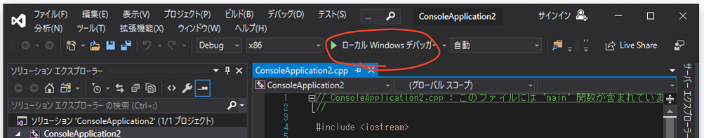

ようこそ
C/C++ の世界は楽しいよ……
はじめに
この C/C++ 講座では、
- 初心者にわかりやすい
- 学ぶ上での罠を除去する
- 一つ一つゆっくり進む
ことを目標に、プログラミング言語 C/C++ の共通部の学習を通してプログラミングをやります。やるったらたる。
必要な前提知識は、義務教育ギリギリくらいの数学と、ほんの少しの論理的思考力だけ。
ロードマップ
目標
- C++ 初級レベルの知識の習得
- 競技プログラミングに必要な知識の習得
- そこから他の言語へ繋がる概念の会得
中間目標リスト
- C/C++ を実行できる環境を構築する
- コードを書く上での基礎知識を身につける
- 型と変数を理解して使用する
- 分岐処理をする
- 反復を適した形式で記述する
- 関数を作る
- 参照を使って効率良く実装する
- 他人が作ったクラスを使ってオブジェクトを作る
- 標準ライブラリを使いこなす
注意
このサイトはスマホからでもいい感じに見られるけれど、PC で作ってね。スマホで何もかもできるわけじゃないよ。
このサイトとプログラミングを行ったり来たりするのがめんどくさいときに、スマホでこのサイトを見ながら PC で作業とかはアリ。大アリのアリ。
貢献
誤字脱字の報告から表現の修正まで、GitHub レポジトリ に Issue や Pull Request 送ってくれれば対応するのじゃ。
環境構築
何も用意してなかったら、何もできないよ
今回のゴール
- C/C++ について少し触れる
- C/C++ プログラムを書いて実行できる環境を作る
所要時間: 20 ~ 30 分くらい
プログラムと実行形式
私達が普段触れている電子機器――スマホ、パソコン、ゲーム機――などには必ずアプリが関わっている。……いるよね？これ過去の人が読んでないよね？
そいつらはみんな、「機械に何をさせるのか」っていうのを記述したもの で作られている。これを (コンピュータ) プログラム という。
そして、プログラムを書くことを プログラミング、プログラムを書く人を プログラマ っていう。
アプリはすべてプログラムによって作られている。
特に、生産的で一般的な手法として、 プログラミング言語 という独自言語のテキストを書くやり方がある。マウスだけで作るやつとかもあるけど、作ってるうちにテキストで書いたほうが楽なことに気づく。これマジ。
ここでは、そのプログラミング言語の中の一つの、それなりに強い言語 C++ を使ってく。ただ、これはまあまあレベルの高いこともできるけど、最初はこの言語の元になった C 言語と共通する部分しか触らないことにする。
なぜ C++ なのか
- C 言語から派生した C 系言語は非常に多く、学習すると それなりに広い分野で活かせる から。
- 他の言語より、実行速度が速い。なぜなら、プログラムをマシンが実際に動かす符号 (機械語っていうけどこれについては詳しくないので勘弁) へと変換しているから。
- マシンに近いこともできて、逆に高度なこともできて、ゲームも作って、あまり目立たないけど大事なシステムも作って、理論上はなんでもできる から。(悪く言えば器用貧乏)
- 顔がでかくて、首が太くて、足が短くて、ちょっとずんぐりむっくりな感じする。(大嘘)
C++ での作業の流れ
- プログラムを書く。コンパイル (下記) する言語ではよく (ソース) コード と呼ばれる。別に味はしない。拡張子は cpp や cxx。ホントはなんでもいいけど。
- コンパイル する。コンパイラ というアプリを使う。これにファイルを渡すと、プログラムから実行できるアプリを作る。有名なのは GNU C Compiler (
gcc,g++) とか Clang (clang,clang++) とか Microsoft Visual C++ (cl) とか。 - コンパイルされた実行形式 (Windows だと
.exeとか) を動かす。
C++ のインストール
Windows の方
ここから Visual Studio 2019 for Community をインストール してね。
Visual Studio Installer で「C++ デスクトップ開発」を選択してインストールするのを忘れないように！
macOS の方
Mac App Store から Xcode をインストール してね。
インストールできたら一回だけ起動してね。このときに必要なものがインストールされるから。
その他特殊な OS の方
Debian 系なら sudo apt-get install build-essential
CentOS 系なら yum install gcc
それ以外は最初から入ってると思う。全部は網羅できないので勘弁してくださいφ(ﾟДﾟ ) ……って、こういう OS 使ってる人たちは絶対インストール方法知ってるでしょ。
自分が自由に使える PC を持っていない方
Wandbox っていう ウェブコンパイラ がおすすめ。
左上のメニューからコンパイラを切り替えられる。C++ なら gcc と clang と zapcc が使える。ちなみに C++ 以外の言語にも対応している。
実行 (Run) すると、下の黒い画面の上に Share ボタン が出てくる。これを押すとその書いたコードを保存して、そのリンクを取得できる。このリンクの URL は https://wandbox.org/permlink/~ になる。
便利だけど、そのうち自分の PC を持つべき。
※自由に使えるっていうのは、えっちな画像を保存しても問題がない状態のことだよ。
Hello, World!
まずはインストールできているか確かめるよ。
Windows で Visual Studio 2019 を使う人
Visual Studio 2019 を起動して、新しいプロジェクトの作成 > コンソールアプリ で プロジェクト を作成してね。
そしたら出てきた画面のツールバーの 再生マークのボタン (Windows デバッガーとか書いているやつ) を押して実行。

すると 黒いコンソール画面 が出てきて Hello, World! って表示される (はず)。そうなっていなかったり詰まったりしたら Slack とかで質問して。
それ以外の人
以下のプログラムをテキストエディタに コピペして、好きな名前で 保存して ね。拡張子 (ファイルの後ろの .txt とか .exe とかのやつ) を .cpp にしておけば、名前は何でもいいよ。
#include <iostream>
int main() {
std::cout << "Hello World!\n";
}
保存したら、コンパイラにプログラムを渡すよ。
macOS だと アプリケーション > ユーティリティ > ターミナル (もしくは好きなターミナルアプリ)
ほかは各自シェル
を開いてね。
cd フォルダ名 でプログラムがあるフォルダに移動してから、g++ ファイル名 でコンパイルしてね。a.out って名前のファイルができるから、これをそのままタイプして実行！

ッターン！ Hello, World! って表示される (はず)。
何かうまくいかなかったら Slack か口頭で 質問 して。なんかやばいから。
まとめ
ちゃんと準備できた？できた？次章からプログラムを書いていくから、よろしくね！
基礎
「基礎がないとどんな才能も開花することはない」
この章で、C/C++ を扱うのに必要な知識が学べる。と、思います。
他の章を読む前に、先にこの章を読んでおいたほうが身のため。読み飛ばすと間違いなく混乱することになる。基礎は大事、古事記にもそう書かれている。
この章のゴール
- コンパイラがコードをどう見るかを少し知る
- main 関数の存在を知る
- 関数を呼び出してみる
- ちょっとだけ計算してみる
- コメントを書けるようにする
- インデントのやり方を知る
- コンソール画面に出力できるようにする
所要時間: 50 ~ 60 分くらい
最小限のコード
綴る！
C++ での 最小限 のコードは、
int main(){}
となる。これを実行しても何もしない。この 虚空 プログラムがメモリに読み込まれるだけ。
こう書いても良い。
int main
(
)
{
}
int
main
( ) { }
なぜかというと、C++ では スペースや改行は自由 なの。でも、意味のある英単語がくっつくのはだめ。
intmain(){}
↑をコンパイルしようとしても 失敗 する。スペースとかで区切られていないから判別できなくなっちゃう。
同様に、何か書き方を間違えていてコンパイラが理解できないと、エラーメッセージを 吐く (テキストメッセージを出すことをたまにこう表現する)。
「コンパイルできない！」「動かない！」「なんかメッセージが大量に出てきちゃった！」とかあったらどんどん質問してね。
コメント
機械はよき理解者ではない
C/C++ では、好きなところに コメント を書ける。
コメントじゃない
// これが一行コメント
コメントじゃない
/*これが複数行コメント
ここはコメント
ここまでコメント*/
コメントじゃない
// ← は次の改行までコメントになる
/*←ここから ここまで→*/
/* 複数行コメントは入れ子にできない /*←働かない */ ここはコメントじゃない！ */
コメントは、コードからは絶対に 読み取れないような情報 を書くために使う。例えば、
- プログラムが 危なそうに見えるが問題ない理由 を書く
- プログラムを わざわざ難解に書いた理由 を書く
- 他からコピーしてきたプログラムの コピー元 URL を書く
という感じ。
自分のプログラムも日が経てば他人のコード と言われるくらい誰でも把握できなくなるから、わかりやすくするのは大事。
ちなみに、いくつかのサイトで書いているような 「〜をしている」系コメントは要らない よ。
そのうちプログラムだけを読んで、何をしているのかある程度分かるようにしなきゃいけないからね。
main 関数
はじまりの塔
さっき何気に書いたこれが、C/C++ でのプログラムが 始まるところ。
念のためだけど、main はメインと読む。マインじゃないよ。
// ここは実行される場所じゃない
int main() {
// ここに処理を書いていく
}
// ここは実行される場所じゃない
この main 関数は、プログラムにおいて 唯一 の始まるところ。これが無いと単独では動かない。
もちろん、複数あることも許されない。
int main() {}
int main() {} // コンパイラ「'main' が再定義されているよー >_<」
文と関数呼び出し
晩ご飯ですよ〜！
文 は、処理を書くためのもの。
;
これは何もしない文で、空 (から) 文とかヌル文とかいう。あんまり使わないけど。この ; は文章の「。」みたいなもので、これが文の終わりになる。; (セミコロン) と : (コロン) を間違えないように。私もよく間違える。
文を複数連ねて書くと、順番に実行 されていく。
; // 文1
// ↓
; // 文2
// ↓
; // 文3
この文を main 関数の中に 0 個以上、複数書いていく。
int main() {
; // 文1
; // 文2
; // 文3
}
さて、「何もしない」を学んで終わりじゃないよ。
関数 というものがある。これは誰かさんが作ったプログラム。これを 関数名 ( 渡すデータ ) と書くと関数を使える。
なぜかみんな忘れるんだけど、関数の呼び出しは 関数名 と 括弧 だよ！
#include <cstdio> // この中に std::printf 関数のプログラムが入っている
int main() {
std::printf(" あなたのすきなことばを "); // テキストは「"」で囲って書く
std::printf(" いくらでも書ける ");
std::printf(" すごい(実際すごい) ");
}
これを実行すると、どうなるかな？
これを関数を 呼ぶ とか 呼び出す とかいう。今回は std::printf 関数を呼んでみた。
いっしょにテキストを渡しているけれど、これを自由に書き換えてみて。黒い画面に 表示されるテキストが変わる はず。
ちなみに、この #include <~> は、指定したファイル (ここでは cstdio) をドバっと展開する。
関数を呼び出すことで、世界中のいろんな人たちが作ったプログラムを使える。すごい？……たぶんすごい！
main 関数も関数の一つだけど、一個しか存在できないし、呼び出すことができないようになってる (実は C 言語だと呼び出せる)。
式と演算子 其の一
機械に頭を使ってもらうことにしよう
文ときたら、次は 式。
なんとなく SF とかでプログラムを知っている人なら、今まで書いたプログラムを見て「こんなテキスト吐くだけなんて、なんか違う!!」と思ってる？
ちゃんとプログラムでも 計算 させられます。
まず、プログラムで計算させる数の書き方から見ていこう。
リテラル
リテラル っていうのは、プログラムの中に書いた、見た目通りの値 のこと。
0;
1;
3;
12;
54;
108;
これを使っていく。
四則演算
1 + 1; // 2
2 - 5; // -3
この + とか - をひっくるめて 演算子 という。他にも、掛け算、割り算、剰余算(割った余り)、などがあるよ。多すぎるから他の演算子は其の二や其の三に分けることにする。本当に多い。
3 * 4; // 3 × 4 = 12。全角の記号が使えないからこれを使う。
7 / 3; // 7 ÷ 3 = 2。整数の計算だよ。小学生のころの記憶を思い出せ！
7 % 3; // 7 ÷ 3 = 2 あまり 1。割り算の余りだよ。小学生のころの(ry
記号の優先順序も数学に近い。同じ優先順序なら左から。わかりにくいけど掛け算、割り算、剰余算は同じ優先順序。
1 + 2 * 3; // 7
6 + 4 % 2 + 3; // 9
4 + 5 - 1; // 8
6 / 2 / 3; // 1
この演算子と数を書いたもののことを 式 という。
括弧式
(1 + 2) * 5; // => 3 * 5 => 15
4 / (3 + 1); // => 4 / 4 => 1
(6 + 4) % (2 + 3); // => 10 % 5 => 0
6 / 2 / 3; // => 3 / 3 => 1
6 / (2 / 3); // => 6 / 0 => Floating point exception。0 では割れない
括弧 のある計算も、同じ感じで書ける。括弧で囲った式 が 優先 的に評価される。
これでよくある計算はさせられるようになった、かな？まぁ、最近のコンパイラは賢いから、コンパイルするときに全部計算しちゃう。
かがくのちからってすげー！
複文とインデント
もっと文を書くからこそ、もっと見やすく書く
複文 (または ブロック) というものがある。これも文の一種。
{
; // 文1
; // 文2
}
一つでも文が書けるところには、波括弧 { ~ } で囲った中に複数の文を書ける。
複文は 何重にでもできる。いくらでも。ただ四重や五重は誰でも見づらい。そこまでいくことはそうそうないけど。
{ { { } { { } } } { { } } }
上のように、ただ波括弧を書くだけだと 見づらい ことこの上なし。
誰にもちゃんと波括弧が始まって閉じているかどうか分からん。さっぱり分からん！
そこで、波括弧の中身を スペース 2 / 4 / 8 つ か、タブ文字 で字下げして見やすくする。
{
{
{
}
{
{
}
}
}
{
{
}
}
}
このように インデント/字下げをする。
これをすると、波括弧がたくさん入れ子になったときに 始まりと終わりの対応がわかるようになる。
始まりと終わりをちゃんと書かないとコンパイルできないし、見づらくなっていって混沌が生まれるから インデントは必ずしよう。
std::cout
外の世界へ
それでは基礎の最後に、これからすべての章で使うものを紹介する。
文字列
C/C++ でテキストを表現するときに手っ取り早いのが 文字列 だよ。" で囲んだ中に、ちょっと都合の悪い文字以外なら何でも書けるよ。
"abcABC0123あいうえお!#$%&'()@";
std::cout <<
この std::cout は << 演算子を使って、いろんなデータを 出力 できるよ。std::cout に向かって流し込むようなイメージ。
#include <iostream>
int main() {
std::cout << " ふつうに ";
std::cout << " いろいろ " << " つなげて " << " しゅつりょく ";
}
これを使うには、main 関数の外の上側 に、#include <iostream> と書く必要がある。
これを書くと iostream ファイル (C++ に最初から用意されているもの) の中身をコピペしてくれる。
このファイルの中に std::cout が入ってるわけ。
最初の環境構築のときの Hello, World! もこれを使っている。
#include <iostream>
int main() {
std::cout << "Hello World!\n";
}
改行するときは、改行文字 \n (これで一文字扱い) を使う。
これは、コードの中で改行のテキストを表現できないので、\ で始まるテキストで特殊な文字を表現するの。
ややこしいけど、伝統的なものなのでしょうがない。
同じように、この中だと " もそのまま表現できないから、\" とする必要がある。
こういうのを エスケープ文字 という。
他にもタブ文字とか行頭文字とかいろんなのがあるけど、改行 \n くらいしか使わないから必要なときに調べて使ってね。
数値でもテキストでも、このように直感的に出力できる。
#include <iostream>
int main() {
std::cout << 1 << " is one\n";
std::cout << "8 * 2 = " << 8 * 2 << " (・▽・💠)しゅげぇ！\n";
}
std::cout はこれから 黒い画面に出力するときに使う からよろしくね〜。
型と変数
ここが情報センターね！
この章で、整数や小数をそれなりに取り扱えるようになる。あと入力の基本をやる。
この章のゴール
- 型の意味を理解する
- 整数と浮動小数点数での演算の違いを把握する
- 整数と浮動小数点数を相互に変換できる
- 型を理解して変数を作る
- 変数に使える名前の仕組みを覚える
- 入力が受け付けられるようになる
所要時間: 80 ~ 90 分くらい
変数と識別子
値を詰め込めー
ここまでで計算させてきたけど、この演算結果を 保存して再利用する ことはできなかった。悲しい。
そこで、変数 を利用する。これは値に名前を付ける機能だよ。例えば 24 を variable という変数に 代入する っていうのは、
？「フン。
24というのかい。贅沢な名だねぇ。」？「今からお前の名前は
variableだ。いいかい、variableだよ。」？「分かったら返事をするんだ、
variable!!」
って感じ (適当)。
変数を作る
変数を作るには、
型 名前;
という文法で書くと使えるようになる。
複文の中で変数の名前を登場させることを 変数の宣言 という。
変数は 宣言した後でないと使えない。
型 のところには、変数に入れられるものを書く。整数なら int (integer - 整数の略) を書く。型について詳しくは次のページで。
int main() {
int variable;
}
variable という名前の変数が生まれました！元気な男の子です！(？)
変数は = 演算子をつかって 中身を変更 できる。変数 = 新しい値の式 と書く。
int main() {
variable; // これは NG。C/C++ での 名前 は、宣言した後でないと使えない
int variable;
variable = 3; // 3 に意味はない。自由に変えてね
variable = variable / 2; // 1。そして代入される
0 = variable; // これは NG。埋め込んだ値 0 を変更しようとしている
}
右の式を左の変数に入れる演算子だから、左右逆にはできない よ。方程式とは違うからね。
代入演算子 の式は、代入された変数 になる。
これによって、同じ値を代入するときに連ねて書ける。
ただし、括弧がないときは今までと違って 右から順に 処理される。
int main() {
int variable;
int variable_neo;
variable_neo = variable = 0;
variable_neo = (variable = 1); // 上と同じ順序、代入は右から順に作用する
(variable_neo = variable) = 3; // これは上の 2 つとは順序が違う
}
中身を取り出すときは、変数の 名前を他の数と同じように書く。
#include <iostream>
int main() {
int variable;
variable = 1;
variable; // 取り出しただけ
variable + 2; // 計算したが代入はしていない
variable = variable + 1; // 代入している
std::cout << variable * 2 << "\n"; // 出力を確かめてみよう
1 = variable; // NG
}
変数の名前は、わかり易い 目的に応じた名前 にしておこう。a とか x とかにしているとわからなくなる。
#include <iostream>
int main() {
int price; // 価格を表す変数なので
price = 108;
std::cout << price << "\n";
price = price / 2;
std::cout << price << "\n";
}
ただ、つけられない名前もある。詳しくは下で。
識別子
C++ で自由に作って使える名前は 識別子 っていう。
これは、
- 英文字 (大文字と小文字は区別される)
- 数字 (一文字目には使えない)
- アンダースコア _ やダラー $ 、日本語や中国語などの 特別な扱いがされない文字
- C/C++ で特別な意味を持つ英字句 (int、and、inline など) ではない名前
しか使えないという制約がある。
↓はすべて問題なく使用できる。英語がわからないならローマ字でもいいからわかりやすくすること。
int price;
int PRICE;
int $$$;
int something_nice;
int a_variable_which_has_very_too_long_name;
int YDK48;
int eigo_ga_wakaranai;
int nedann;
一応日本語だけの名前とかにもできるけれど、しないようにしようね。
なぜかというと、もし自分の母国語を使うのが許されるとしたら、外国人はすぐに日本語や中国語やロシア語をタイプできるかな？
int 値段;
int Спасибо;
int 不客氣;
↓は制約を満たしていないからコンパイルできない例だよ。憐れだねぇ。
int 0_is_zero;
int -minus;
int "quote";
int and;
int inline;
int / double
整数と小数と
機械にとっては、どんなデータも 0 と 1 の数列にしか見えない。
もちろん人間にとってはやりづらいので、できる限り人間がいつもしている表現を扱いたいんだ。
そこで 0 と 1 だけのデータを 型 に閉じ込めて、値の埋め込みや足し算や掛け算を簡単にできるようにしたの。
偉大な発明だわー。
今回はたくさんある型の中でもよく使う、
int(整数 - integer の略)double(倍精度浮動小数点数 - double floating-point の略)
を紹介するよ。
ちなみに、(静的な) 型があると記述ミスによる不具合「バグ」を防ぐ働きもある。意外と大きいメリット。
int
整数 を扱う型。これが出てこないプログラムはそうそう無い。
これがこの型のリテラル達。
見やすいように自由に ' を入れて桁区切りできる (数そのものには影響しない)。他にも (16 進数とかの) 記法があるけど、多いのでまたの機会に。
0;
1;
502;
25701;
-2149;
20'200'621;
使うときはこんな感じになる。
int price = 500;
int discout = 80;
price = price - discount;
double
小数と、あといくつかの数 (無限大とか) を扱う型。小数が必要な計算に使う。
この型のリテラル達。小数とだいたい同じ。小数点の左側や右側が全部 0 のときは省略できる。
3.0;
0.740;
5.; // => 5.0
.2; // => 0.2
他にも (16 進数の) 記法があるけど、そっちはまず使わない。
より小さい・大きい数を書くために指数表記 (× 10 の n 乗で書いて 0 を減らす) もある。
3000000.; // 0 何個か見づらい
3e6; // 3 × 10 の 6 乗
3e+6; // 上と同じ
.005; // 0 何個か(ry
5e-3; // 5 × 10 の -3 乗
使うときはこんな感じになる。これも普通に四則演算できる (剰余算を除いて)。
double ratio = 1.6;
double player_speed_x = 2.0;
player_speed_x = player_speed_x * ratio;
2.0 / 0.0; // => inf。エラーにならない代わりに無限大 (infinity) になる
4.0 % .3; // コンパイルできない。double の剰余はできない
初期化
作業する前にお掃除
変数を作った時点では、その中に格納されている値は、前に使ったメモリ上の ゴミ が残っている。
... 011100101 10011010 01010101 11111111 ...
|a-----------------------------------|
マシン「メモリは確保したで！(ワイは中身のこと知らんけど)」
だから、変数を使う前に 何か値を代入しておかないと、実行したときに謎の数値が出現しだしたりする。
int count;
count; // 未知の値が入っている
count = 0; // これを忘れるとまずい
count = count + 1;
count = count + 1;
// :
// :
そこで、変数を作るとき、最初に入れておく値も 併せて書ける。
変数の後ろに = 初期値 を付け足すだけ。
int count = 0; // 0 から数え始めるぞ
count = count + 1;
count = count + 1;
// :
// :
これで、既に数が入った状態の変数として作成される。
こういうのを変数の 初期化 っていう。
……値がおかしくなった時は、代入している箇所すべて の記述ミスを疑わなきゃいけなくなる、初期化は大事だよ。
演算子 其の二
あと二回変身を残している
変数と型を学んだところで、変数を扱う上で便利な演算子を覚えておこう。絶対使うから。
複合代入演算子
代入演算子 = で変数の値を変更するときは、演算した式 を代入するけど、同じ名前を二回書くことになってめんどくさい。
プログラマーは怠惰でなくっちゃね！
そこで、足したものを代入 みたいなことをするために 複合代入演算子 がある。
int subtotal = 0;
subtotal = subtotal + 108;
subtotal += 108; // 上と同じ
subtotal = subtotal - 54;
subtotal -= 54; // 上と同じ
ほとんどの値を計算する演算子 (+ とか * とか) はこの複合代入が存在する。
できないときは素直に代入演算子を使うしか無いけど。
インクリメント・デクリメント
更に、1 だけ足す ことや 1 だけ引く ことに特化した演算子がある。
int count = 0;
count += 1;
++count; // 上と同じ
count -= 1;
--count; // 上と同じ
ものや回数を数えるするときに重宝する。
型変換
ﾍｼﾝ！
本来、違う型どうしでの計算はできないけれど、型を変換するとできるようになる。
暗黙的型変換
まず、違う型どうしを計算させようとしても、コンパイルできちゃう。
このとき、より表現の幅が広い型へと変換される。
例えば、double と int で演算するときは、int の方が double へと変換される。
500 * 1.08; // => 500. * 1.08 => 540.
更に、変数に代入するときはその変数の型へと変換される。
int price = 500;
price = price * 1.08; // price * 1.08 は double だが、再び int になる
price *= 1.08; // 上と同じ
static_cast
暗黙的ではなく、明示的な型変換もある。それがこれ。
static_cast < 型名 > ( 式 )
たまに使うくらいだけど、実際に使うとこんな感じ。
double num = 1.46;
// double を int にすると小数点以下が切り捨てられる
int num2 = static_cast<int>(num); // => 1
// int を double にすると小数点以下が 0 でスタートする
static_cast<double>(num2); // 1.0
これから型変換を明示するときに使うよ。
スコープ
変数はいつか死ぬ
変数は、名前の宣言があってから、その複文の終わりまでの間だけで使用できる。
int main() {
// まだ何も使えない
wide; // wide は使えないので、コンパイルできない
int wide; // wide が使えるようになる
{ // スコープの始まり
int narrow; // narrow 生誕
narrow = 1;
wide = narrow; // スコープの外側も普通に使える
} // narrow 死す
wide; // 1
{
int narrow; // narrow 生誕
// 上の narrow とは別の変数、偶然に同名なだけ
narrow = wide + 1;
wide = narrow;
}
wide; // 2
narrow; // narrow は使えないので、コンパイルできない
} // wide が使えなくなる
これを スコープ という。
つまり、複文を使うと変数の生存期間を限定できる。
名前が隠れる
ネストした複文の外側と内側で同名の名前がある場合は、内側のものが優先 される。
{
int num; // A
num = 0;
{
int num; // B
num = 3; // これは B
}
num; // 0。これは A
}
ただし、読みにくくなるので違う名前をつけるべき。
std::cin
今度は入力
いよいよ 入力 を扱う時が来た。今までコンパイルする前に値を埋め込んでいたけど、プログラムを実行するタイミングで値を決められるようになるってこと。
ここで使うのは std::cin というもので、std::cout と同じ iostream ファイルに入っている。
この std::cin は >> 演算子を使って、いろんなデータを 入力 できるよ。std::cin から 取り出す ようなイメージ。
#include <iostream>
int main() {
int input_number;
std::cin >> input_number;
std::cout << input_number;
}
上の例を実行して、黒い画面で 数字を入力 → Enter してみると、何が出力されるでしょうか？
Wandbox の場合は、実行前に下の Stdin (標準入力 - Standard input の略) のテキスト欄に入れておくと、入力に使用されるようになってる。
この std::cin 最大の特徴が、いろんな型でそのまま入力を受け取れるところだよ。
#include <iostream>
int main() {
std::cout << "円の半径を入力してください。その面積を出力します。\n";
double radius;
std::cin >> radius;
std::cout << radius * radius * 3.1416;
}
複数の値を同時に受け取る こともできるよ。これは左の変数から順に入力された値が入れられるよ。
#include <iostream>
int main() {
std::cout << "2 つの整数を入力してください。最初の値 - 次の値 を出力します。\n";
int first, second;
std::cin >> first >> second;
std::cout << first - second;
}
こんな感じで 計算結果を返すプログラム を自分で アレンジして書いてみよう。std::cin >> ~ だけだとコンソール画面で何を入力すればいいのかわからない。先に std::cout で 何を入力すればいいか表示 したほうがいいかも。
章末問題
へんすうA へんすうB があらわれた！
以下の問題を用意しておきました。解いてプログラミングになれましょ。
問 1
2 つの整数の入力を変数に受け取れ。
そして、その和を出力せよ。
クリックでヒントを見れるよ
例えば、変数 a b を用意し、std::cin を用いて入力を受け取ってから、a + b を std::cout で出力してみよう。
このように動作せよ。
入力:
3 5
出力:
8
問 2
1 つの整数 N の入力を変数に受け取れ。
そして、1 以上 N 以下の整数のうち、25 で割り切れる数の個数を出力せよ。
クリックでヒントを見れるよ
整数 1 以上 N 以下のうち M で割り切れる数は、M 個につき 1 つある。じゃあ N を M で割れば求まりそうだね。
このように動作せよ。
入力:
2525
出力:
101
問 3
1 つの整数の入力を変数に受け取れ。
そして、1 + 2 + ... + その数 を出力せよ。
クリックでヒントを見れるよ
1 以上 N 以下の整数の合計は、(N + 1) * N / 2 で計算できるよ。
このように動作せよ。
入力:
6
出力:
21
分岐
ここに線路を切り替えるレバーがあります
この章で、機械に簡単な判断をさせられるようになる。
この章のゴール
- 真偽値を理解する
- 数値の比較演算を使いこなす
- 真偽値が真のときのみに処理する
- 真偽値どうしの演算を覚える
- 真偽値で2つに分岐する
- 整数値で複数に分岐する
所要時間: 80 ~ 90 分くらい
bool
正しいか正しくないか
新しい型 bool の登場だ。真偽値 という、ある物事が 正しい か 正しくない かを表す値を扱う。
true は何かが正しいことを表す。
false は何かが正しくないことを表す。
bool zero_is_0;
zero_is_0 = true;
bool you_are_me;
you_are_me = false;
整数に型変換する場合
false=>0true=>1
整数と四則演算させようとすると、こんな感じの不思議な挙動になっちゃう。
3 * false; // => 0
4 + true; // => 5
他の型から bool に型変換する場合
0(もしくは0と同じ何か) はfalse- それ以外はすべて
true
これはかなり直感的ではないので、使わないようにするよ。
std::cout で出力するとき
std::cout で普通に出力しようとすると、勝手に 0 と 1 に変換されちゃう。わけがわからないよ。
#include <iostream>
int main() {
std::cout << true;
}
true や false のまま出力するには、std::boolalpha (これは関数) をそれより前に流し込む必要がある。
#include <iostream>
int main() {
std::cout << std::boolalpha << true;
}
これを取り消して元に戻す場合は、std::noboolalpha を流す。
#include <iostream>
int main() {
std::cout << std::boolalpha << true
<< std::noboolalpha << true;
}
めんどくさいけど、忘れないでおいてね。
演算子 其の三
誰かと比較される時代
さらなる演算子、比較演算子 だ。関係演算子ともいう。
全部で > < <= >= == !=。多いナ！
整数どうしの関係を書くと、渡された値が その関係になっているかどうか が計算結果になる。
つまり、演算すると bool が出てくる。
// a < b ~~~ a が b より小さいかどうか
0 < 1; // true
6 < 1; // false
// a > b ~~~ a が b より大きいかどうか
0 > 6; // false
1 > -1; // true
// a <= b ~~~ a が b 以下かどうか
1 <= 0; // false
4 <= 4; // true
// a >= b ~~~ a が b 以上かどうか
1 >= 0; // true
7 >= 7; // true
// a == b ~~~ a と b が等しいかどうか
0 == 0; // true
1 == -1; // false
// a != b ~~~ a と b が等しくないかどうか
2 != 6; // true
3 != 3; // false
二文字の演算子の = は必ず 右側 と覚えよう。
整数の関係が正しいかどうか を、bool 型にできるのですごくよく使う。
しっかり慣れておこう。
if
もしも〜♪(ｳﾞｪｯ)君が〜♪(ｳﾞｯ)一人なら〜♪(ｳﾞｪｯｳﾞｪｯ)
それでは if 文を学ぼう。
これは特殊な文で、bool 型の値を使って 分岐する処理 が書ける。
bool が C++ で二番目に活躍するぞ。
文法はこう。
後に文を続けて書くけど、これはもっぱら複文にする。
if ( 真偽値の式 ) 式が true のときに実行する文
比較演算子と組み合わせれば、条件を満たす時にする処理 が書ける。
int value;
std::cin >> value;
if (0 < value) {
// value が 0 より大きい時だけ実行される
std::cout << "0 よりおっきい";
}
if (value < 0) {
// value が 0 より小さい時だけ実行される
std::cout << "0 よりちっちゃい";
}
// value が 0 ぴったりのときは何も起きない
条件を満たさないときは、そのまま文が飛ばされて下に流れる。
if の波括弧の 始まりを書いたら、すぐに終わりも書く ように心がけよう。
更に、基礎でも書いたように インデントして 波括弧が どのくらい入れ子になっているか見やすいように すべし。
他人や未来の自分がコードを見るときに非常に見づらいから。
もちろん if の中にも if を書ける。
int value;
std::cin >> value;
if (0 <= value) {
if (value <= 10) {
// value が 0 以上で 10 以下のときだけ実行される
}
// value が 0 以上であれば実行される
if (value < 0) {
// ここが実行されることはありえない
}
}
いろいろ組み合わせて試してみようぜ。
演算子 其の四
かつ、もしくは、ではない
bool 型どうしの演算もある。
値の種類が二つしかないから、全部のパターンを書いておくね。
AND
&& は AND 論理積の演算子。
両者が true のときは true で、それ以外は false になる。
false && false; // => false
true && false; // => false
false && true; // => false
true && true; // => true
OR
|| は OR 論理和の演算子。
どちらかが true であれば true で、それ以外は false になる。
false || false; // => false
true || false; // => true
false || true; // => true
true || true; // => true
NOT
! は NOT 否定の演算子。
true と false を逆にする。これだけは 値の頭につける演算子 だから注意。
!true; // => false
!false; // => true
比較演算子との複合
&& や || は、< とかより優先順位が低いので、条件の組み合わせ が書ける。
0 <= value && value <= 10; // value が 0 以上 10 以下のとき
value == 0 || value == 1 || value == 3; // value が 0, 1, 3 のとき
// この 3 つは同じ式。ド・モルガンの法則などによって変形してみた
!(5 <= value && value <= 7); // value が 5 以上 7 以下でないとき
!(5 <= value) || !(value <= 7); // value が 5 以上 7 以下でないとき
5 > value || value > 7; // value が 5 以上 7 以下でないとき
あんまり長いと見づらいので、そのときは bool 型の 変数に一旦保管 したほうがいいかも。
else
トロッコのレールを切り替える
if 文では、条件を満たしたときの処理 だけを書けた。でも、if の 条件を満たさないとき が少々面倒。
bool condition; // false か true になる
if (condition) {
// 満たすとき
}
if (!condition) {
// 満たさないとき
}
この 満たさないとき をそのまま書く構文、else 文がある。
if ( 真偽値の式 ) 式が true のときの文
else 式が false のときの文
以下のように、条件を満たさないときの処理を書ける。
bool condition;
if (condition) {
// 満たすとき
} else {
// 満たさないとき
}
ただ if 文を連ねるのと、 if - else にするのとは、2 つの文の どちらかしか実行されない ところが違う。
if の場合:
条件を満たすかどうか
↓ ↘
↓ 満たすときの処理
↓ ↙
次の処理
if - else の場合:
条件を満たすかどうか
↓ ↘
満たさないときの処理|満たすときの処理
↓ ↙
次の処理
上の図の通り、if だけのときは、条件を満たさないときに何もしない。ひょっとして、ナマケモノのフレンズとか？
else if
else の直後に if を書くことで、好きなだけ分岐を増やせる。
int value;
std::cin >> value;
if (value % 15 == 0) {
std::cout << value << " は 3 と 5 の倍数\n";
} else if (value % 3 == 0) {
std::cout << value << " は 3 の倍数\n";
} else if (value % 5 == 0) {
std::cout << value << " は 5 の倍数\n";
} else {
std::cout << value << " は " << value << "\n";
}
各条件は上から順に確かめられて、true になった条件の、直後の文だけが実行される。
分岐処理を使って多様な応答をするプログラムを作ってみるといいかも。
switch
タコ足配線
整数で分岐するときに、このように 等しいかどうかの分岐を連ねる ということをやったりする。
std::cout << "Select:\n 1. Hello.\n 2. Hi！\n other. ???\n";
int select;
std::cin >> select;
if (select == 1) {
std::cout << "Hello.\n";
} else if (select == 2) {
std::cout << "Hi！\n";
} else {
std::cout << "???\n";
}
これは switch 文で書き換えられる。文法は以下の通り。
switch ( 整数の式 ) {
case 値:
式と値が等しいときの文
break;
:
:
default:
どの case にも当てはまらないときの文
break;
}
すると、case に一致する値のところ まで、実行する文が飛ばされる。
case 値 の後ろに付いているのは、; ではなく : だよ。間違えないように。
最初の例を switch に書き換えるとこうなる。どっちが見やすいと思う？どっちでもいいけど。
std::cout << "Select:\n 1. Hello.\n 2. Hi！\n other. ???\n";
int select;
std::cin >> select;
switch (select) {
case 1:
std::cout << "Hello.\n";
break;
case 2:
std::cout << "Hi！\n";
break;
default:
std::cout << "???\n";
break;
}
switch 文は整数にしか使えない！ ...そういう仕様なんだ.
この break (処理を脱出する特殊な文) が無いときは、そのまま下へ処理が流れていく。break を忘れないように。
switch (input) {
case 0: {
// input が 0 のとき
}
// break しないと……
case 1: {
// input が 0 か 1 のとき
}
break;
default:
// それ以外のとき
break;
}
break の解説は次の章でやる。
これは本来の使い方ってわけでもないからね。
章末問題
あっちこっちそっち
以下の問題を用意しておきました。解いてプログラミングになれましょ。
例題 1
2 つの整数の入力を変数に受け取れ。
そして、その大きい方を出力せよ。
このように動作せよ。
入力:
3 5
出力:
5
解き方
まず、解く方針を考える。
- 変数を 2 つ用意しておく
- 1 つ目の数値を変数に受け取る
- 2 つ目の数値を別の変数に受け取る
- 2 つの変数を比較する
ifで分岐して大きいほうを出力
これを実装してみる。
#include <iostream>
int main() {
int a, b;
std::cin >> a >> b;
if (a < b) {
std::cout << b;
} else {
std::cout << a;
}
}
いろいろ入力してみて期待通りに動くことを確認する。
不具合があったら、原因を特定して書き直す。
これが基本。
問 1
2 つの整数の入力を変数に受け取れ。
そして、その小さい方を出力せよ。
このように動作せよ。
入力:
3 5
出力:
3
問 2
1 つの小数の入力を変数に受け取れ。
そして、その小数点以下を切り上げて出力せよ。
クリックでヒントを見れるよ
まず、小数点以下を切り捨てた値と元の値の差を計算しよう。切り上げる条件は、これが 0 じゃないとき。
このように動作せよ。
入力:1
2.002
出力1:
3
入力2:
-1.03
出力2:
0
入力3:
4
出力3:
4
反復
なんどもなんども
この章で、機械に繰り返しをさせられるようになる。
この章のゴール
- 反復のしくみと条件を理解する
- 反復と条件の判断のタイミングを把握する
- 反復内の処理を次に進める文を覚える
- 反復内の処理を抜ける文を覚える
- より抽象的な反復を使えるようにする
所要時間: 80 ~ 90 分くらい
while
ずーっと、ただし条件がある
今までのプログラムは、上から順に実行されるけどその処理は全部手で書いていた。
めんどくさいけどこれはしょうがない。
処理A1;
処理B1;
処理A2; // 同じような処理……
処理B2;
処理A3; // また同じような処理だ！
処理B3;
そのまま書くと、
- 修正するときは全部直さなきゃいけない
- 何をやっているのかが見づらい
- 指定回数の繰り返しが実現できない
などなど問題が出てくる。
しかも機械に単純作業をさせるとなると、間違いなく 繰り返し が必要なんだ。信じてくれ。
この繰り返しをさせる文が、while 文。
文法はこんな感じ。
while ( 条件式 ) 繰り返す文
while (わいる、みたいに読む) は英語で ~である間 って意味だよ。
この条件式が true かどうかチェックして、繰り返す文を実行する。
実際に使うとこうなる。
#include <iostream>
int main() {
int a = 0;
while (a < 10) {
std::cout << a << "\n";
a += 2;
}
// 繰り返しが終わるとここにジャンプしてくる
}
条件式→繰り返す文→条件式→繰り返す文→…… という順序で動作する。
実行してみると、
0
2
4
6
8
ってなるはず。順に追ってみよう。
ループ1回目
aは0
a < 10はtrueなので中身を実行する
aを出力
a += 2を実行
ループ2回目
aは2
a < 10はtrueなので中身を実行する
aを出力
a += 2を実行
という感じで繰り返されて、
ループ6回目
aは10
a < 10はfalseなので中身を実行しない
whileの次へジャンププログラム終了
という流れ。何度も読み返して、ゆっくり慣れていってね！
条件式
最初から条件式が false だと、中の 処理は一回も実行されない ってこと。
while (false) {
std::cout << "(´д｀)\n";
}
逆に、true だと中から抜け出せない 無限ループ になる。
while (true) {
std::cout << "You are an idiot\n☺ ☺ ☺\n";
}
こうなっても 抜け出す手段はある けど、それは次の次のページ。
true のときに実行されるから注意！私でも逆にしちゃうことはあるけど。
do - while
まぁまずはお茶でも飲んで
さっきの while は、判断してから実行してた。
でもたまーに実行してから判断したいときもある。
それをするのが do - while 文。
文法はこんな感じ。
do 実行する文 while ( 条件式 );
評価と実行の順序が逆 なのが最大の特徴。
つまり、最低でも一回以上は処理が実行されるということ。
実際に使うとこんな感じ。
#include <iostream>
int main() {
int input;
do {
std::cout << "0 よりも大きい整数を入力してね\n";
std::cin >> input;
} while (!(0 < input));
do {
std::cout << "やあ！\n";
--input;
} while (0 < input);
}
入力をやり直させるときに使うこともできる。
ただ、while よりは使わない。使える場面がそんなにないし。
だから説明もこれで終わりだよ。
continue
また次のループで逢いましょう
ループには 判断 と 処理 の繰り返ししかないと思った？
さすがにそれだと不便だから、いくつか 制御する文 があるよ。
この continue 文は、処理を途中でやめて 処理の最後の文の後ろに移る 文だよ。
下に書いたようなプログラムを実行してみればわかると思う。
#include <iostream>
int main() {
int count = 0;
while (count <= 10) {
++count;
if (count % 3 == 0) {
continue; // A へとジャンプ
}
std::cout << count << " ";
// A
}
}
ループ内の処理を中断するのにうってつけ。
これから アルゴリズム ―― 問題を解くための定式化された手順を考えるときにもちょくちょく出てくるから、頭の片隅にはおいておこう。
break
全て壊すんだ
continue に続いて、break もループ制御する文だよ。
そういえば switch 文のときにもでてきてたね。
これは、直近の ループを終了する文 だよ。
実際に使うとこんな感じ。
#include <iostream>
int main() {
int count = 0;
while (true) {
std::cout << "カウント: " << count << "\n"
<< "1 でカウントアップ | それ以外で終了\n";
int input;
std::cin >> input;
if (input != 1) { break; }
++count;
}
}
繰り返しをとりあえず無限ループにしておいて、終了を if と break にするのはよくやる。
bool should_exit = false;
while (true) {
if (should_exit) { break; }
// :
// :
}
switch 文でも、文の中から抜け出すときに使われているけど、別物として覚えたほうがいいよ。
for
フォウ、フォーウ！ファッ！
for 文は、while よりも数段上の 上位互換。それも尋常ではないレベルで。
文法はこんな感じ。心して読んでくれ。
for ( 初期化式 ; 条件式 ; 更新式 ) 実行する文
なかなかにクセのある文法だけど、伝統工芸品的なものなのでしょうがない。多分来世紀にも残る。
処理の順序
for 文に三つある式たちには実行順序がある。以下のプログラムを例に処理を追いかけてみよう。
int main() {
int i;
for (i = 0; i < 3; ++i) { /* ~ */ }
}
ループ前
初期化式
i = 0を実行
ループ 1 回目
iは0条件式
i < 3がtrueなのでループ続行処理 (今回は空) を実行
更新式
++iを実行
が繰り返されていき、
ループ 4 回目
iは3条件式
i < 3がfalseなのでループ終了
というふうに全部で 3 回処理が実行される。
for で continue
for の中でも continue が使える。
これを実行してみよう。
for (int count = 1; count <= 10; ++count) {
if (count % 3 == 0) {
continue; // A へとジャンプ
}
std::cout << count << " ";
// A
}
次の 評価式、続いて 条件式 の実行に移るのがわかったかな？
実例
実際に使うとこんな感じ。初期化式の中で変数を作ることもできるので、こう書いてもいい。
// これ↓が繰り返す回数になっている
for (int i = 0; i < 3; ++i) {
; // 何かする
}
数を数えつつ繰り返すのに最適。よく使うのでしっかり書きなれておいてほしい。
ちなみに、この i のようにループの制御に使っている変数を 制御変数 と言ったりする。
カウントアップの例
0 から 10 まで数え上げる。
for (int count = 0; count < 10; ++count) { }
1 から 5 まで数え上げる。上とは 条件式の演算子が違う ので注意！
for (int count = 1; count <= 5; ++count) {}
カウントダウンの例
11 から 0 まで数え下げる。上とは 更新式の演算子が違う ので注意！
for (int count = 11; 0 < count; --count) { }
7 から 2 まで数え上げる。
for (int count = 7; 2 <= count; --count) {}
回数を指定した繰り返しにおいて、ふんだんに使うので絶対に覚えてね？
ちなみに、最近はループする文が for だけのプログラミング言語もある。
多重ループ
繰り返しを繰り返す
もちろん、ループ内でもループを書ける。
for ( /* ~ */ ) {
for ( /* ~ */ ) {
}
}
これを 二重ループ とか、更に何個も連ねるのを 多重ループ とかいう。
外側で 10 回、内側で 10 回繰り返すと、10 × 10 = 100 回繰り返す。
外側で N 回、内側で M 回繰り返すと、N × M 回繰り返す。
以下、よくやる使い方を紹介しておく。
二つの値の組み合わせをすべて網羅する場合
ここでは、与えられた半径 radius に対して、その半径の円の中に、中心から敷き詰めた正方形のタイルの数を数えてみる。

double radius = 1.42; // 約 √2、標準入力でもいいけど今回は決め打ち
int count = 0;
int limit = radius + 0.5;
// まず X と Y が + の方向の点だけ数える
for (int x = 1; x <= limit; ++x) {
for (int y = 1; y <= limit; ++y) {
if (x * x + y * y < radius * radius) { // 円の方程式 x^2 + y^2 < r^2 をしている
++count;
}
}
}
// 4 倍にする
count = count * 4 ;
一応この例では、x のループの中に y のループを書いてもいいし、y のループの中に x のループを書いてもいい。
複数行に渡って、パターンを画面に出力する場合
一行ずつに着目して考えると良い。
今回は、"#" を黒点、" " を白点として、画面に半径 radius の円を描いてみる。
今の行の y 座標がわかっていると仮定しよう。これはあとで追加する 外側の for ループ の制御変数だよ。
x 座標を増やしていくループを書く。
for (int x = -radius; x <= radius; ++x) {
// x^2 + y^2 <= r^2
if (x * x + y * y <= radius * radius) {
std::cout << "#";
} else {
std::cout << " ";
}
}
こんな感じの一行を考えたら、それを繰り返す場合を考える。
for (int y = -radius; y <= radius; ++y) {
// ここは一行の処理が始まる前
for (int x = -radius; x <= radius; ++x) {
// x^2 + y^2 <= r^2
if (x * x + y * y <= radius * radius) {
std::cout << "#";
} else {
std::cout << " ";
}
}
// ここは一行の処理が終わった後
// この改行を忘れないように
std::cout << "\n";
}
行を繰り返すので、外側の for はこれだけ。
これで完成。実行してみると、きれいな円 が見られるはず。他にもいろいろやってみてね。
この場合は、ループの内側と外側を逆にしたりはできない。
横方向 (行) の出力を縦に繰り返しているからね。
順序を逆にするわかるけど、表示が崩れちゃう。
多重ループのときの break
多重ループしたときの break は、その直近、つまり内側のループしか抜けられないので注意。
while (true) {
while (true) {
break;
}
// break したらここに来る
}
// このままだと無限ループだぁ
外側のループとかを抜ける方法は次の章でやるよ。
そういう処理はただのループでは向いてないはずだからね。
章末問題
ぐるぐまわーる
以下の問題を用意しておきました。解いてプログラミングになれましょ。
例題 1
1 つの整数の入力を受け取れ。
そして、1 からその数までを、一つづつ増やしながら出力せよ。
入力が 1 より小さいときは何も出力しないこと。
このように動作せよ。
入力1:
8
出力1:
12345678
入力2:
-1
出力2:
解き方
方針を考えてみよっか。
- 入力を受け取る変数を 1 つ用意する。
- 入力を変数に受け取る。
- 制御変数を用意し、1 で初期化する。
- 制御変数が入力以下であればループする。
- 制御変数の数値を出力する。
- 制御変数を 1 増やす。
実装してみよう。
#include <iostream>
int main() {
int input;
std::cin >> input;
int count = 1;
while (count <= input) {
std::cout << count;
++count;
}
}
ちなみに、for で書くとこうなる。こちらが書けるようになろう。
#include <iostream>
int main() {
int input;
std::cin >> input;
for (int count = 1; count <= input; ++count) {
std::cout << count;
}
}
問 1
階乗 というのは、1 からその数までをすべて掛けた数 のこと。
例えば、3 の階乗 は 1 × 2 × 3 = 6 になる。
1 つの自然数の入力を受け取れ。そして、その階乗を出力せよ。
このように動作せよ。
入力:
8
出力:
40320
※入力に 17 以上の値を入れると結果がおかしくなると思うけど、その対処法は別の回でやるよ。
問 2
まず、英語圏には "Fizz Buzz" という数を数える言葉遊びがありまして、
1 2 Fizz 4 Buzz Fizz 7 8 Fizz Buzz 11 Fizz 13 14 FizzBuzz 16 17 Fizz 19 Buzz ...
みたいになる。3 の倍数は "Fizz"、5 の倍数は "Buzz"、15 の倍数は "FizzBuzz"、それ以外はそのまま答える遊び。
今回はこれをプログラムで再現してみる。機械は失敗しないので。
1 つの整数の入力を受け取れ。
そして、その数まで "Fizz Buzz" を行え。
このように動作せよ。
入力:
11
出力:
1 2 Fizz 4 Buzz Fizz 7 8 Fizz Buzz 11
関数を作る
処理をキリのいいところでぶった斬れ
この章で、機械にさせる処理を分離して再利用できるようになる。
この章のゴール
- 関数の役割を理解する。
- 関数の名前が持つ性質を把握する。
- 引数と戻り値を使いこなす。
- 値渡しの挙動を理解する。
所要時間: 80 ~ 90 分くらい
関数を作る
$f(x) = ...$
今までは、どんな処理もぜーんぶ main 関数の中に書いてきた。
しかも、その中の処理の一環で、他の人が作った関数を呼び出したりもしてた。std::cout << とかは関数だよ？
今度は、我々が関数を作る番だ。
関数の一つや二つ、パパっと作れるようになろう。
プログラミングでの関数には、
- ただ処理を分けるだけ
- 計算処理を体系的にまとめる
の二通りがあるんだけど、このページでは 1 をやって、次のページからは 2 を掘り下げていくよ。
1 にあたる関数の文法はこう。
void 名前 ()
{
0個以上の文
}
実際に定義するとこんな感じ。
void gather_friends() {
std::cout << "サッカーしようぜ\n";
}
// ↑ と ↓ の順序は逆でも OK
void treat_as_ball() {
std::cout << "お前ボールな\n";
}
int main() {
gather_friends();
treat_as_ball();
}
この void (ボイド、日本語にすると虚無) は型の一種なんだけど、ここに型を書いている理由は 戻り値とreturn でやるよ。
引数
いんすう派は賢いな
関数を作ったとはいえ、ずっと同じ処理をするだけの関数 じゃいろいろ不便。でしょ？
そこで、引数 (ひきすう) というものを作って、この呼び出すと同時に値を渡してもらえる。
この引数リストは、関数の文法で、
void 名前 ( 引数リスト )
{
0個以上の文
}
この 丸括弧の中 に , で区切って変数のように書く。
例えば、こんな感じになる。
#include <iostream>
// 数を出力する
void print_number(int number) {
std::cout << "Number: " << number << "\n";
}
// 2 つの数の合計が正の数ならそれを出力する
void print_sum_if_positive(int alpha, int beta) {
int sum = alpha + beta;
if (0 < sum) {
print_number(sum);
}
}
int main() {
// 数値を変えて遊んでみよう
print_number(63);
print_number(-43);
print_sum_if_positive(63, -43); // 複数の値は , で区切って渡す
}
関数が受け取る予定の、名前を付けた引数は 仮引数 という。
対して、関数に渡す実際の値は 実引数 という。
まぁ、あんまり使わない用語だけれどね。
戻り値 とreturn
（っ'-')╮ =͟͟͞͞0110110011000001 ﾌﾞｫﾝ
return 文は、関数が、実行してきた誰かに 値を返す 文。
この文を処理すると 関数の実行は終了する。
このように、return の後に続けて 式 を書く。
この式は 戻り値 (もしくは返り値) というもので、関数の実行結果みたいに扱われる。
この式の型である 戻り値型 を、関数の最初に書かないといけない。
戻り値型 関数名 ( 引数リスト ) { 0個以上の文 }
実際に使うとこんな感じ。
そうそう、この戻り値型が void だと、値を返さない。
#include <iostream>
// 怠けるか怠けないか
void will_be(bool lazy) {
if (lazy) {
std::cout << "ﾅﾏｹﾙ(・´з`・)\n";
return; // 関数を終了する効果しかない
}
std::cout << "ﾊﾀﾗｸ！(・∀・)\n";
return; // ←は省略してもいい
}
// テキトーな数字を返すだけ
int random_number() {
return 4;
}
int main() {
will_be(false);
will_be(true);
std::cout << random_number();
}
もっぱら、計算結果を返すのに使う。
例えば、$f(x) = x^3 + x^2 = x^2 (x + 1)$ を計算する (数学に近い) 関数はこんな風に書く。
double f(double x) { // x^3 + x^2
double x2 = x * x;
return x2 * (x + 1);
}
さぁ、いろんな種類の値を送り返してやろう。
main 関数に関するお詫び(？)
実は今まで黙っていたことがある。
main 関数は本当はこう書かなきゃいけなかったんだよ!!!
int main() {
return 0;
}
ΩΩΩ<な、なんだってー！？
この 0 はプログラムの正常終了を表してる。0 以外を返すと異常終了として扱われる。
return 0; を省略すると、これが最後に自動で挿入される。だから書かなくてもいいってワケ。
値渡し
書き写してから作業
かしこい人はすでに気づいていたかもしれないけれど、引数は変数みたいに変更できちゃう。
// トリッキーに階乗を計算
int fraction(int n) {
int fraction = 1;
for (; 1 < n; --n) { fraction *= n; }
return fraction;
}
でも、変更しても外の変数の値は変わらない。
これは、変数の中の値だけを渡しているから。
void substitute2(int var) {
var = 2; // は？
}
int main() {
int box = 0;
substitute2(box);
std::cout << box; // たしかみてみろ！
}
こういう挙動を 値渡し っていう。
引数に渡されるのは変数そのものじゃないので、変なコードを書かないようにね。
変数のようなものを引数に渡す方法は次の章でやるよ。
じゃあ戻り値も値が渡されているのかと思うだろうけど、こっちは戻り値が使われるところに直接代入されている。そのほうが効率いいんだってさ。
名前解決
コンパイラ「誰よその関数！」
いろいろいじくりまわしていた人は気づいているかもしれないけれど、
このように 関数の定義を main 関数よりも下に書く と、
int main() {
hey(2);
}
void hey(int num) {}
呼び出した行でコンパイラが
~ って名前は宣言されていません
みたいなエラーを吐く。
C++ での名前は、すでに 宣言していないと使用できない。今どきの言語では上でも下でもいいのだけれど。
定義は宣言でもある ので、main 関数より上で関数を定義していれば問題なかった。
でも、どうしても下側に書きたい場合は、ちゃんと 宣言 だけができる。
文法はこんな感じ。
戻り値の型 関数名 ( 引数リスト ) ;
関数の定義と少し違っていて、文を書く部分は ; になっている。
さっきのを書き足すとこうなる。
void foo(double ratio); // どんな引数なのか名前で示す
void hey(int); // 引数名は省略してもいい
int main() {
hey(2);
foo(3.0);
}
void hey(int) {} // ちなみに使わない引数名も省略できる
#include <iostream>
void foo(double ratio) {
std::cout << "Ratio: " << ratio << "\n";
}
オブジェクトたち
データのかたまり
この章で、多様なデータ型を扱えるようになる。
この章のゴール
- いろいろな型に触れる
- 型につけられる指定子を覚える
- クラスを使いインスタンスを作る
- インスタンスのメンバ関数を呼び出す
所要時間: 80 ~ 90 分くらい
float char 16/8/2進数リテラル
たまに使うやつら
ここでは、絶対に必要ではないけれどたまに使う型やリテラルを紹介する。
float
単精度浮動小数点数 (float、floating-point value の略) は、昔からある小数とかを表す型。精度が低いけれど、ごく一部の環境では稀に速く動くことがあったりするかもしれない。
double のリテラルの後ろに、f か F をつけると float のリテラルになる。
float a = 1.2f;
float b = 3.F;
float c = .5f;
前にも言ったけど、double は倍精度浮動小数点数。フツーはこっちを使う。
char
char は文字を表現するのに使われる 整数 型。といっても、英文字や一部半角記号 (詳しくは ASCII を参照) を表す数字しか格納できない。
char ch = 65; // ASCII で A にあたる数
std::cout << ch; // A
' で囲った中に表現可能な文字を書くと、対応する整数に変換される。
文字通りの char の値にできるので、こっちを使うべき。
char ch = 'A'; // 65 と同等
std::cout << ch; // A
日本語の一文字とかは容量が足りなくて単体で格納できない。
一応そのための別の型や表現手段はあるけれど、かなり複雑なやつなのに役に立たないので説明しないよ。
16/8/2進数リテラル
コンピュータで扱う数字は、よく 2進数 を扱う。これをプログラム中に直接書くときに、もっと見やすくするためのもの。
進数 というのは、桁上りする数のこと。例えば普段使っている 10進数 だと、0 1 2 ... 9 まで行って 10 11 ... ってなる。9 の次で桁が上がっているわけね。
これが 16進数 だと、0 1 2 ... 9 a b c d e f までの数字があって、10 11 ... 1a 1b ... 1f 20 となっていく。
0x で始まると 16進数 で、0 で始まると 8進数 で、0b で始まると 2進数 になる。
// 16進数
0xaf; // => 175
0xff762a; // => 16741930
// 8進数
051; // => 41
0176324; // => 64724
// 2進数
0b1001; // => 9
0b10001110; // => 142
long short signed unsigned
長いの短いの付いてないの
今回も、ちょっとマイナー寄りな感じ。
型には、指定子というものをつけて型の性質を少し変化させられるよ。
サイズを変える指定子
long
long は、それなりによく使う指定子。型の扱えるサイズが元のサイズ以上になる。
だいたいの環境だと、int は ±2 の 31 乗 (約21億) まで扱えるんだけれど、long int は ±2 の 63 乗 (約922京) まで扱えちゃう。
前にやった 階乗の計算 みたいな、大きい数値の計算だと必須。
リテラルの後ろに l か L をつけると、long なリテラルになる。
int normal = 21034;
long int big = 64683521l;
int long huge = 1029482019312L;
// long だけだと long int とみなされる
long large = 5l;
あと、double にも long をつけられる。
double は 約 ±1.79 × 10 の 308 乗 まで扱えるけれど、long double は 約 ±1.18 × 10 の 4932 乗 まで扱える。すごいけど、環境によっては動かないこともあるので注意。
double normal = 1e8;
long double big = 1e60l;
double long huge = 1e1200L;
long をつけられるのは、int と double だけ。
short
これは本当にめったに使わない。型の扱えるサイズが元のサイズ以下になる。
だいたいの環境だと、-32768 ~ 32767 まで扱える。
short にリテラル用の記法は無い。悲しいね。
int normal = 12000;
short int small = 21;
int short tiny = 3;
// short だけだと shor int とみなされる
short bit = 1;
long long
頭悪い書き方だけど、long 以上のサイズになる long long もある。これも環境によっては動かない。
だいたいの環境だと、約 ±9.22 × 10 の 18 乗 まで扱える。
リテラルの後ろに ll か LL をつけると、long なリテラルになる。
long long int big = 20000000000LL;
long int long huge = 20000000000LL;
int long long scaled = 20000000000LL;
// long long だけだと long long int とみなされる
long long large = 1;
符号を操作する指定子
unsigned
unsigned (日本語で符号なし) は、型が プラスしか表現できなくなる。整数型にだけ 付けられる。
その代わりに、マイナスに使っていたサイズがプラスに使われるので、二倍の数値が扱える。
……まぁ二倍くらいの差しかないので、なにか別のこと (後の章でやるビット演算とか) くらいにしか使わない。
unsigned char a;
unsigned short b;
unsigned int c;
unsigned long d;
unsigned long long e;
signed
signed (日本語で符号あり) は、普通のときと変わらない。指定はしなくてもいい。
signed int a;
実は char が signed なのか unsigned なのかは 環境によって変わる ので、そのへんを厳密にしたいときには使う。
signed char a = 127;
unsigned char b = 255;
クラスとインスタンス
クラスの世界へようこそ
ここから、クラス をどんどんやっていく。当たり前のように使うことになるから覚えよう。
あ、教室のことじゃないよ。
言語に最初からあるものじゃなくて、ちょっと特殊な プログラム内で作った型。しかも既にたくさん用意されている。
今回は string ファイルの std::string クラスを使ってみよう。
これはテキストを変数に格納して操作できるクラスだよ。
他にもいろんなクラスはあるけど、まずこれで慣れよう。
#include <iostream>
#include <string>
int main() {
std::string s;
std::cout << s; // まだ何も出ない
}
うん。変数はいつもどおり。
この変数 s には、ここで初登場の特殊なものが入る。
この入ったものをクラスに対して インスタンス という。
インスタンスを変数に入れずに直接作ることもできる。
その場合は関数呼び出しのように、クラスを使う。
std::string(); // インスタンスが作られるが変数には入らない
std::string text = std::string(); // 変数に初期化
std::string label; // ↑はなくても同じ
// これは関数の宣言
std::string question(); // 動くけど変数ではない
クラスは、インスタンスを作る関数またはその型 だと思って大丈夫。
インスタンスを作るのにも初期化ができる。
std::string には 文字列 を渡して初期化できる。
初期化には 3 種類の構文がある。どれを使うかはお好みで。
// 関数風
std::string morning = std::string("Good morning！\n");
// 渡す初期値が一つだけのとき使える
std::string afternoon = "Good afternoon.\n";
// 変数風
std::string evening("Good evening...\n");
std::cout << morning << afternoon << evening;
ちなみに、この文法は今までの型にもちゃんと使える。
int a = int(2);
int b = 3;
int c(4);
std::cout << a << b << c;
メンバ関数呼び出し
関数が生えてる！？
いよいよインスタンスの本領発揮タイムだよ。
インスタンスは、. に続けて、そのクラスのその インスタンスについてる関数を呼び出せる よ。
この関数のことを、そのクラスの メンバ関数 っていう。
試しに std::string クラスだと、こんなメンバ関数を呼び出せる。
#include <iostream>
#include <string>
int main() {
std::string text = "Hello";
std::cout << text << "\n"; // Hello
// append、末尾に追加
text.append(", World");
std::cout << text << "\n"; // Hello, World
text += ", World"; // 上と同じ (このクラスの機能)
std::cout << text << "\n"; // Hello, World, World
text.append(2, '!'); // 2 個の '!'
std::cout << text << "\n"; // Hello, World, World!!
// insert、指定位置に挿入
// 注意！ 位置は 0 から数える
text.insert(0, ">> "); // 0 番目に ">> "
std::cout << text << "\n"; // >> Hello, World, World!!
text.insert(22, 3, '.'); // 22 番目に 3 個の '.'
std::cout << text << "\n"; // >> Hello, World, World...!!
// replace、指定範囲を書き換え
text.replace(0, 1, ""); // 0 番目から 1 文字を "" に
std::cout << text << "\n"; // > Hello, World, World...!!
text.replace(14, 10, 2, '~'); // 14 番目から 10 文字を 2 個の '~' に
std::cout << text << "\n"; // > Hello, World~~!!
std::string sub; // 保管用にもう一個
// substr、指定範囲をコピー
sub = text.substr(2); // 2 番目から最後まで
std::cout << sub << "\n"; // Hello, World~~!!
sub = sub.substr(7, 5); // 7 番目から 5 文字まで
std::cout << sub << "\n"; // World
}
こいつらを使いこなすだけでも、基本的なテキスト処理ができちゃう。
この std::string は別に暗記とかしなくてもいいよ。ネットで調べればいくらでも出てくる。
クラスのインスタンス から メンバ関数を呼び出す 流れだけは忘れないでね。
参照
オメーだよオメー
この章で、変数の効率的な扱いができるようになる。
この章のゴール
- const の性質と必要性を習得する
- 参照を使いこなしてデータの無駄なコピーを防ぐ
- 定数の参照を使用する
- 配列を理解する
- 文字列の仕様を把握する
所要時間: 80 ~ 90 分くらい
const
そのままの君でいて
今までの 変数 は、スコープ内であれば文字通りどこでも値を書き換えることができた。
できたんだ。
これはたしかに便利だけど、数の別名 として変数を使っていた場合は 変更できるとめんどくさいこと になる。
double tax = 1.08; // 税率 8% なので 1.08倍
int price = 500;
price *= tax;
// :
// :
tax = 1.10; // いつのまにか 10% に
// :
// :
price = 800;
price *= tax; // あれ？
変更できることが、逆に混乱を招いたりバグを生むことがある。
そこで型に const (定まった、constant の略) 修飾子をつけると、const な型になる。変数の型のところに使えば const な変数が作れる。
// 前でも後でもいい
int const a;
const int b;
int const c, d; // 同時に 2 つ
この変数を作るときに値を入れることを 初期化 というのだけれど、この初期化のタイミングでしか値をセットできない。
そして、変数を作った後は 代入できなくなる。コンパイラがどこかで うっかり代入していないかチェックしてくれる んだ！
double const tax = 1.08; // 税率 8% = 1.08倍
int price = 500;
price *= tax;
// :
// :
tax = 1.10; // コンパイルできない
// :
// :
price = 800;
price *= tax; // 安心して tax が使える
const の値を別の変数にコピーすることはできる。
const int magical = 4444;
int temp = magical;
引数にも const 指定はできる。
int add(int left, int right) {
left += right - right; // (意味はない)
return left + right;
}
int add_const(int const left, int const right) {
left += right - right; // NG
return left + right;
}
現時点では役に立たないけど、次の次のページで応用的に使う。
参照型
こちら を参照してください
const に続いて、こっちも型を拡張する機能だよ。
変数名の前にこのように & をつけ、同じ型の変数で初期化すると、
int body = 0;
int &ref = body;
変数に対して、それを 参照する型 の変数を作れる。
言い換えると、変数の純粋な別名になって、変数を間接的に変更できる。
int body = 0;
int &ref = body;
ref = 3;
body; // これも 3 になる
body = 2;
ref; // これも 2 になる
& は変数名の前につける。
だから、同時に宣言する場合はこうなる。
int body = 0, &ref = body;
// body は int 型で、ref は int& 型になる
参照の伝播
参照型変数に入っている参照は、さらに別の参照型変数に渡せる。
つまり、参照は又貸しできちゃう。
int body = 1;
int &ref = body;
int &ref_ref = ref;
参照の引数
引数にした場合、関数の外にある変数を直接変更できる。
int write_2(int &target) {
target = 2;
}
int main() {
int number = 0;
write_2(number);
numer; // 2
}
ちなみに、std::cin もこれを利用して変数に書き込んでいる。
#include <iostream>
int main() {
int input;
std::cin >> input; // input の参照を渡している
}
const の参照
( →_→)ｱｸｾｽ！
今度は const と参照を組み合わせてみよう。
int value = 0;
int const &ref = value;
// いろいろしてみる
int read = ref; // OK、読み込める
ref = 2; // NG、書き込めない
このように、const な変数への参照 という扱いになる。
他の変数から値を読み取るだけ の場合に、コピーを防ぐときに使う感じ。
#include <string>
std::string add_quote(std::string const& message) {
return "「" + message + "」"; // ここでは複製される
}
std::string add_quote_copy(std::string message) { // ここで複製されて
return "「" + message + "」"; // 更にここで複製される
}
#include <iostream>
int main() {
std::string text = "abc";
{
std::string quote_text = add_quote(text); // text は複製されない
std::cout << quote_text << "\n";
}
{
std::string quote_text = add_quote_copy(text); // text は複製される
std::cout << quote_text << "\n";
}
}
この例は一回しかコピーが起こらないので大した違いはないけど、
大量のデータを扱い始めると問題が顕現してくる。
ただし、int みたいな小さいサイズのを const& で渡してもあんまり美味しくない。
- 参照型のサイズ (大抵
unsigned longと同じ) より大きいサイズのもの - 複製する必要がないのにコピーすると遅いもの
とかにはよく効く。
配列型
一列に並べ〜！
今までの型だと、一つの値を一つづつ丁寧に扱うことしかできなかった。
ここでは、扱う数が決まっている、それなりの量のデータを格納するときの型について書くよ。
配列型 は、データを格納する 要素 を指定した数だけ持つ。
文法はこう。
格納する型 名前 [ 要素数 ]
int array[10]; // int が 10 個分
初期化
この型で初期化するときには、リスト初期化 が使える。
これは以下のように、{ から } の間に、, で区切って値を入れたものを初期値にする書き方だよ。
要素数を指定して、同じ長さのリストを用意する場合
その長さぴったりの配列型の変数が作られる。
int nums[5] = {0, 2, 4, 8, 1};
nums はこんな感じになる。
| 位置 | 値 |
|---|---|
| 0 | 0 |
| 1 | 2 |
| 2 | 4 |
| 3 | 8 |
| 4 | 1 |
インデックス (位置を表す数字) は 0 から始まる。これ大事。
要素数を指定しない場合
リスト側と同じ要素数になる。
int nums[] = {0, 4, 5};
// ↑ に 3 を入れたのと同じ
要素数より、リストの数が少ない場合
リスト側で足りない部分には、0 に相当するものが入る。
int buffer[15] = {}; // 残りすべては 0
double vertexes[20] = {1.0, 1.0, 1.0}; // 残りは 0.0
要素にアクセス
作った配列は、ちゃんとその中身を触れる。
配列に格納されている値のことを 要素 っていうよ。
要素にアクセスするときは、[ と ] の間に インデックス を入れる。
int nums[5] = {1, 4, 5, 7};
nums[0]; // 1
nums[3]; // 5
nums[2] = 2;
nums[4] = 8;
変数も入れられるので、こういうこともできる。
#include <iostream>
int main() {
int nums[5] = {1, 4, 5, 7};
for (int i = 0; i < 5; ++i) { // i は 0 から 4 へ
int const &nums_i = nums[i]; // i 番目の nums
std::cout << "nums[" << i << "] ~~~ " << nums_i << "\n";
}
}
まぁこれからこの配列型を使う機会はほとんどない。
けれど、複数の値を格納したり取り出したりする感覚 を少しつかんでもらえたらいいな。
ちなみに、ここでやった リスト初期化 は今までの型にも使える。
int a = {}; // 0 と同じ
double b = {2.0};
文字列
ちなみに string は日本語で糸なんだけど、いまいちイメージに合わないので文字列と訳す
何気なく使っていた "これ" だけど、もう少し解説しておく。
この文字列 (C++ では C文字列 ともいわれる) は、連続した char の塊。
ヌル文字 という文字 ('\0') があならず最後に来る。
char text[] = { 'B', 'E', 'A', '\0' };
↑ と ↓ は同じ！
char text[] = "BEA"; // こう見えて 4 要素ある
配列と違ってヌル文字が必ずあるので、長さに依存しない、こんなループ処理が書ける。
#include <iostream>
int main() {
char text[] = "BEA";
for (int i = 0; text[i] != '\0'; ++i) {
++text[i]; // 文字が一つ次に進む
}
std::cout << text; // CFB
}
ただ、文字列だと文字を足したりくっつけたりとかはできない。
同じことは std::string でもできる。
#include <iostream>
#include <string>
int main() {
std::string text = "BEA";
for (int i = 0; i < text.size(); ++i) {
++text.at(i); // at メンバ関数で要素にアクセス
}
std::cout << text; // CFB
}
あんまり文字列を使うメリットはないので、変更したりするときは絶対に std::string を使おうね。
範囲for文
もっと楽に回る
ここで、非常に便利な制御文を紹介するよ。
C++ やるなら、これが使えるとすごく楽になるからね。
文法
範囲 for 文 は、データに対する繰り返しが楽にかける for だよ。
for ( 変数 : 反復するもの ) 繰り返す文
これは、
- 反復するもの から値を一つづつ取り出して変数の中に入れる。
- 繰り返す文 を実行する。↑ の変数が使える。
というもの。
実例
実際に使うとこんな感じ。
まず、配列に使える。
int nums[] = {4, 2, 3};
for (int element : nums) { // コピーで取り出して、
std::cout << element << " "; // 一つづつ出力
}
for (int &element : nums) { // 参照で取り出して、
--element; // 一つ減らす
}
// もう一度出力
for (int element : nums) {
std::cout << element << " ";
}
std::string にも (クラス側が対応しているから) 使える。
std::string text("Hello");
for (char part : text) { // コピーで取り出しても、
++part; // 変更は反映されない
}
std::cout << text << "\n";
for (char &part : text) { // 参照で取り出すことで、
++part; // 変更できる
}
std::cout << text << "\n";
これもしっかり練習して使いこなせるようになっておこう。
標準ライブラリ 初級編
値を詰め込め！
この章で、C++ ならではの便利ないろはができるようになる。
この章のゴール
- 名前空間とその意義を理解する
- 数学的な関数たちを大体知っておく
- テンプレートクラスの使い方を把握する
- コンテナを使って任意長のデータを扱う
- 初等的なイテレータでコンテナにアクセスする
所要時間: 80 ~ 90 分くらい
名前空間とusing
:: をぶっ壊す！
もう気づいていると思うけれど、
今まで使ってきた標準ライブラリのものを見てみると、
std::cout とか std::string みたいに std:: が付いてる。
これは、std という 名前空間 に入っているから付けなくちゃいけない。
名前空間::名前 というふうに名前を使うようになっている。
自分が作った変数や関数と名前が被ってもいいようにしているんだ。
ここでは、名前空間の作り方は教えないよ。
その代わりに、何回も std:: って書かなくていいようにする方法を紹介するね。
using 宣言
using 名前空間::名前; と書くと、それ以降で その名前を使うときは 名前空間:: を省略できる ようになる。
#include <iostream>
// ちなみに、iostream ファイルの中で #include <string> されている
int main() {
std::cout << "Hi！\n";
using std::cout;
cout << "Shorter.\n";
std::string text("Longer.");
using std::string;
cout << string("Short！");
}
using ディレクティブ
using namespace 名前空間; と書くと、それ以降 すべてで 名前空間:: を省略できる ようになる。
ただ、予期しない名前被りを起こしやすいので使い所には注意。
#include <iostream>
int main() {
std::cout << "Hi！\n";
using namespace std;
cout << "Shorter.\n";
std::string text("Longer.");
cout << string("Short！");
}
こっちより using 宣言を使うべきだけど、競技プログラミングとかで少ないタイプにしたいなら使ってもいいよ。
#include <iostream>
int main() {
using namespace std;
cout.tie(nullptr);
}
数学的な関数
y = (√sin x)^3
ここでは、C++ 標準ライブラリに入ってる数学的な関数を解説するよ。
理論的な処理をするときは、それなりの頻度で使う。
cmath
C++ では、double (とその他の型) で計算する数学の関数が用意されている。
それらを使うには、cmath ファイルを #include する必要があるよ。
#include <cmath>
以下のコードを動かすときは ↑ を忘れないでね。
pow
std::pow(x, y) のときに x の y 乗 を計算する。英語で power (~乗) の略。
std::cout << "2 ^ 3 = " << std::pow(2, 3)
<< "\n8 ^ 1.2 = " << std::pow(8, 1.2)
<< "\n4 ^ 0.5 = " << std::pow(4, 0.5);
sqrt
引数の平方根 (英語で Square-root を略して sqrt) を計算する。
std::cout << "√9 = " << std::sqrt(9)
<< "\n√8 = " << std::sqrt(8)
<< "\n√-1 = " << std::sqrt(-1);
// sqrt(-1) は Not A Number エラーになる
round / ceil / floor / trunc
小数を整数にする関数 4 つをまとめて紹介。
round (日本語で丸める) は四捨五入を計算する。負の数でも 0 から遠い方向に丸める。
using std::round;
round(2.0); // 2
round(2.1); // 2
round(2.5); // 3
round(2.9); // 3
round(-2.0); // -2
round(-2.1); // -2
round(-2.5); // -3
round(-2.9); // -3
ceil (日本語で天井) は天井関数。その数以上の整数にする。
using std::ceil;
ceil(2.0); // 2
ceil(2.1); // 3
ceil(2.5); // 3
ceil(2.9); // 3
ceil(-2.0); // -2
ceil(-2.1); // -2
ceil(-2.5); // -2
ceil(-2.9); // -2
floor (日本語で床) は床関数。その数以下の整数にする。
using std::floor;
floor(2.0); // 2
floor(2.1); // 2
floor(2.5); // 2
floor(2.9); // 2
floor(-2.0); // -2
floor(-2.1); // -3
floor(-2.5); // -3
floor(-2.9); // -3
trunc (truncate は日本語で切り捨て) は切り捨て関数。小数点以下を消す。
using std::trunc;
trunc(2.0); // 2
trunc(2.1); // 2
trunc(2.5); // 2
trunc(2.9); // 2
trunc(-2.0); // -2
trunc(-2.1); // -2
trunc(-2.5); // -2
trunc(-2.9); // -2
全部覚えなくてもいいけど、小数に 4 種類の丸め方があることを知ってたら幸せになれるかも。
sin / cos / tan
みんな大好き三角関数。引数の単位はラジアンだから注意。
std::sin(3.14); // だいたい 0
std::sin(1.57); // だいたい 1
std::cos(3.14); // だいたい -1
std::cos(1.57); // だいたい 0
std::tan(3.14); // だいたい 0
std::tan(1.57); // だいたい inf
他にもいろんな関数がある。日本語のサイトだと ここ とか見るといいかも。
numeric
int のような整数について計算する関数もあるけれど、これらは numeric にある。
#include <numeric>
以下のコードを動かすときは ↑ を忘れないでね。
gcd
gcd (Greatest Common Divisor の略) は最大公約数を計算する。
using std::gcd;
gcd(2, 3); // 1
gcd(6, 12); // 6
gcd(36, 48); // 12
lcm
lcm (Least Common Multiple の略) は最小公倍数を計算する。
using std::lcm;
lcm(2, 3); // 6
lcm(6, 12); // 12
lcm(36, 48); // 144
コンテナ
みんなコンテナは持ったな!!
今までの入力では、繰り返したとしても一つずつしか扱えなかった。
#include <iostream>
double add(double a, double b) {
return a + b;
}
void ask_sum() {
using std::cin;
using std::cout;
cout << "合計を出力するべ。\n"
<< "値をスペースとかで区切って 2 つ入力してくれ。\n";
double first = 0, second = 0;
cin >> first >> second;
// 入力エラー処理テンプレ
while (cin.fail()) {
cin.clear();
cin.ignore();
cout << "なんかおかしいべ。もう一度入力してけろ。\n";
cin >> first >> second;
}
cout << "合計 = " << add(first, second) << "\n";
}
int main() {
while (true) {
ask_sum();
std::cout << "もうやめるかい？ [y で終了]";
char command;
std::cin >> command;
if (command == 'y' || command == 'Y') {
break;
}
}
}
これだと、大量のデータを集計して平均を求めたりとかができない。
そこで、そういうのを扱う コンテナクラス を使う。
コンテナ っていうのは、いくらでも値を詰め込めるクラスのこと。
std::string もコンテナの一種といえるよ。
よく使う std::vector から見ていこう。
std::vector
同じ型のデータを大量に格納するクラス。サイズを増やせる配列みたいな感じ。
使うには、#include <vector> が必要。
#include <vector>
int main() {
std::vector<int> data;
}
これは テンプレート といって、使う側から型や値を テンプレート引数 として渡せる仕組み。
テンプレート名 < テンプレート引数, ... >
ここでは格納する型を渡すと、その型が格納できるクラスになる。
つまり、
std::vector<int>はintが格納できるクラスstd::vector<double>はdoubleが格納できるクラス
ってこと。
末尾へ追加
push_back メンバ関数は、リストの後ろに値を一つ追加する。std::vector が最も得意な操作。
std::vector<int> data;
data.push_back(4);
data.push_back(3);
data.push_back(1);
data.push_back(0);
data.push_back(5);
初期化
このクラスの初期化は二種類ある。
サイズ指定
予め必要なサイズとその中を埋める値を指定するやり方。
std::vector<int> stat(20); // 20 個の 0 (正確には int{})
std::vector<double> data(15, 5.0); // 15 個の 5.0
すべて同じ値にすることしかできないので、0, 1, 2, 3, ... みたくするときはループで要素を追加していく必要がある。
std::vector<int> nums;
for (int i = 0; i < 20; ++i) {
nums.push_back(i);
}
※イテレータを学ぶともっと楽できるけれど、それはまた別のお話。
リスト
中に格納するデータをそのまま書く。
std::vector<int> stat = {2, 4, 0, 3};
std::vector<double> data = {1.0};
取得
丹精込めて詰め込んだ値を取り出そう。
サイズ
size メンバ関数で詰め込んだ値の数を取得できる。
// 何も入れていないと 0
std::vector<int>().size(); // 0
std::vector<int> data(4);
data.size(); // 4
要素
at メンバ関数で要素の参照を取得できる。
配列と同じで最初の要素は 0 番目。
std::vector<int> data = {4, 3, 1, 0, 5};
data.at(1); // 3
data.at(4) = 2; // 変更もできる
// 存在しない要素。エラーで止まる
data.at(6);
data.at(-1) = 5;
配列と同じように [] でアクセスすることもできる。
こちらは、存在しない要素を指定してもエラーにはならない。
でも、そこに書き込もうとするとシステムがプログラムを止めることがある。
std::vector<int> data = {4, 3, 1, 0, 5};
data[1]; // 3
data[4] = 2; // 変更もできる
// 存在しない要素
data.at[6]; // 値は不定
data.at[-1] = 5; // 強制終了するかも
at は安全だから、[] を使うのは実行速度が必要なときだけにしてね。
末尾要素
std::vector<int> data = {2, 4, 5};
↑ の最後の要素にアクセスするときは、
data.at(data.size() - 1);
なんてしなくても、
data.back();
でできる。
末尾から削除
pop_back で、リストの後ろから値を一つ削除する。
std::vector<int> data = {4, 6, 8};
data.pop_back();
std::map
std::map を使うには、#include <map> が必要。
これは、値と、それを表すキー値、二つのセットをたくさん格納するクラス。
キーの値を渡せば値が取得できるってしくみ。
その性質上、キーが重複するような格納はできない。
ちなみに、よく連想配列とか辞書配列とか言われる。
std::map<std::string, int> score;
1 つ目のテンプレート引数が キーの型 で、2 つ目のテンプレート引数が 対応する値の型。
↑ の型は、std::string をキーとして int を格納するクラス。
初期化
このクラスにはリスト初期化しかない。
std::map<int, int> integer = { // 初期化リストの中に
{0, 1}, // 初期化リストたち
{1, 2},
{2, 3}
};
std::map<std::string, int> score = {
{"Ange", 510},
{"Lize", 480},
{"Toko", 540}
};
取得
要素の取得には二通りの方法があって、それぞれ性質が異なる。
サイズ
こっちも、格納している要素の数は size で取得できる。
std::map<int, int> data = {
{0, 1},
{1, 2},
{2, 3}
};
data.size(); // 3
[]
配列のように [ キー ] で取得できる。
まだそのキーの値がないときは、値の型{} (0 に相当するもの) が入る。
std::map<int, int> matrix = {{1, 2}};
matrix[1]; // 2
matrix[3]; // 無いので追加。0
matrix[-1] = 4; // 無いので追加。そして代入
std::map<std::string, std::string> word;
word["Hello"]; // 無いので追加。std::string{} が入る
word["Good morning"] = "こんばんは"; // 文字列が std::string になって入る
こんな感じで、要素の挿入もこれでできちゃう。
at
at も取得するメンバ関数。
std::vector のように、存在しないときはエラーで止まる。
std::map<char, int> hex = {
{'A', 10},
{'B', 11}
};
hex.at('A'); // 10
hex.at('C'); // エラーで止まる
要素の確認
contains は指定のキーが格納されているかどうかを bool で返す。
std::map<char, int> hex = {
{'D', 13}
};
bool has_a = hex.contains('A');
bool has_d = hex.contains('D');
要素があるときだけその要素を取得したいときは、上の at と組み合わせる。
std::map<char, int> hex = {
{'D', 13}
};
bool has_a = hex.contains('A');
if (has_a) {
int &a = hex.at('A');
}
bool has_d = hex.contains('D');
if (has_d) {
int &d = hex.at('D');
}
削除
erase で指定したキーの要素を削除する。
std::map<std::string, long> record = {
{"0d5e3", 4000},
{"4ghd7", 8002},
{"5hf71", 12032},
};
record.erase("0d5e3");
他にもいろんなコンテナクラスやそのメンバ関数がある。
けど、その前に次のページで イテレータ について軽く触れておこう。
余談だけれど、std::vector<bool> の at メンバ関数は、他の型と違って要素への参照を返さない。代わりに独自の型を返すので注意。一応 bool 型の変数に受け取ったり、代入演算子で変更はできる。
かんたんイテレータ
くるくるまわーる
イテレータ (iterator、反復子) は、コンテナの要素にアクセスするための、コンテナクラス付属のクラス。
コンテナクラスに対して、その要素を見る窓のようなクラスだよ。
このインスタンスに演算子を使うことで、
- 要素の参照を取得する (
*単項演算子) - 次の要素に移動する (
++/+演算子) - 前の要素に移動する (
--/-演算子)
などなどといったことができる。
とりあえず、実際にコンテナクラスのイテレータに触れていこう。
std::vector::iterator
std::vector のイテレータクラスは std::vector::iterator。
最初の要素のイテレータは begin、末尾の更に後ろの存在しない要素は end で取得できる。
std::vector<int> data = {1, 4, 5, 2};
std::vector<int>::iterator head = data.begin();
*head; // 1
++head;
*head; // 4
*head = 3;
std::vector<int>::iterator tail = data.end();
*tail; // これは末尾の次の要素なので不定
--tail;
*tail; // 2
--tail;
--tail;
*tail; // 3
いくつかのメンバ関数は、引数にイテレータを取る。
std::vector<int> data = {4, 2, 2, 3};
// insert は イテレータ の
位置以降を後ろにずらして、そこに 値 を入れる
data.insert(data.begin() + 1, 5); // 1 番目に 5 を挿入
data; // {4, 5, 2, 2, 3}
// erase は イテレータ の指す要素を削除して、それ以降を前に詰める
data.erase(data.begin() + 2); // 2 番目を削除
data; // {4, 5, 2, 3}
// erase は イテレータの範囲 (以上, 未満) を削除するものもある
data.erase(data.begin() + 2, data.begin() + 4); // 2 番目以上 4 番目未満を削除
data; // {4, 5}
std::map::iterator
std::map のイテレータクラスは std::map::iterator。
最初の要素のイテレータは begin、末尾の更に後ろの存在しない要素は end で取得できる。
イテレータでアクセスする要素の順番は、昇順 (小さい数から大きい数、文字列とかは辞書順) になっている。
なお、イテレータでアクセスした要素は、キーと値がセットになった std::pair クラスになっている。
このクラスからは、first / second メンバ変数でそれぞれ キー / 値 を取得できる。
std::map<int, int> data = {
{1, 4},
{5, 2}
};
std::map<int, int>::iterator head = data.begin();
*head; // {1, 4}
++head;
*head; // {5, 2}
(*head).second = 3;
std::map<int, int>::iterator tail = data.end();
*tail; // これは末尾の次の要素なので不定
--tail;
*tail; // {5, 3}
--tail;
(*tail).first; // 1
イテレータを引数に取ったり、戻り値として返したりするメンバ関数はあるけれど、特に有用というわけでもないので紹介しないよ。
イテレータと範囲 for
さて、久しぶりの 範囲 for 文 だよ。
実は、範囲 for 文はイテレータがあるものなら何でも使えるよ。
std::vector<int> data = {1, 5, 2, 3, 4};
for (int element : data) {
std::cout << element << "\n";
}
std::cout << "値を何個入れるの？ : ";
int input_n = 0;
std::cin >> input_n;
// input_n 個の入力を受付る
std::vector<double> input(input_n);
for (int &element : input) {
std::cin >> element;
}
std::map<std::string, int> score = {
{"Ange", 510},
{"Lize", 480},
{"Toko", 540}
};
std::cout << "--- Score ---\n";
for (std::pair<std::string, int> element : score) {
std::cout << element.first << ": "
<< element.second << " Pt.\n";
}
イテレータの大事さがわかったかな？
ちなみに、配列にイテレータがあるわけじゃないけど、特別に同じように扱えるようになっているよ。
多重コンテナ
コンテナを開けると、そこはコンテナだった
ここでは、vector の中に vector を入れるのをやっていくよ。
std::vector<std::vector<int>>
このクラスを初期化するときは、こうなるよ。
std::vector<std::vector<int>> matrix(2, // 2 個の ↓
std::vector<int>(2, 1) // 2 個の 1
);
アクセスするときも、at が 2 個出てくる。
std::vector<std::vector<int>> matrix(2,
std::vector<int>(2, 1)
);
matrix.at(0).at(0); // 1
matrix.at(1).back(); // 1
matrix.back().back(); // 1
こういうのを 多重、もしくは 多次元 なコンテナっていう。
使い所
多次元のコンテナは、小難しい問題を速く解くプログラムを作るときに重宝する。
ここではその例題をいくつか示してくよ。
動的計画法
動的計画法 (DP、Dyanic Programming) は、いくつかの組み合わせに関する問題で役に立つ解法だよ。
まずは、部分和問題 からいってみよう。
こんな感じの問題だよ。
入力:
N S A1 A2 A3 ... AN
Nは 入力A1, A2, A3, ...の総数を表す整数Sはただの整数A1, A2, A3, ...は正の整数問題:
A1, A2, A3, ...の中からいくつかを組み合わせて合計して、ぴったりSにできるか求める。
Sにできる場合は"YES"、できない場合は"NO"に、改行を加えて出力せよ。
まずは 入力 を受け取るとこを書く。
#include <iostream>
#include <vector>
int main() {
using std::cin;
using std::vector;
int N, S;
cin >> N >> S;
vector<int> A(N);
for (auto &elem : A) {
cin >> elem;
}
// ここからは、ココに書き足すコードだけを示すよ
}
こういうパッと見て解き方がさっぱり分からん問題は、かんたんなケースを考えてから難しくしていく のがいい。
一段階むずかしい問題の答え に、よりかんたんな問題の答えを使って答える 考え方が大事だよ。
この問題の一番 かんたん なケースを考えよう。
入力を
0個組み合わせて0が作れるかどうか
これが一番 かんたん なんだけど、これは必ず true だよ。
true;
虚無の合計だけど、とりあえず 0 だと考える。いいね？
片方の数字を変数にして、グレードアップしよう。
入力を
n個組み合わせで0が作れるかどうか
この答えは、かんたん な問題の答えを使って求められる。
n - 1個の組み合わせで0が作れるかどうか
を満たせば、n 個の組み合わせでも必ず 0 が作れるよ。
この答えを保存する vector<bool> dp というコンテナを用意する。
dp[i] には、「i 個組み合わせて 0 が作れるかどうか」を格納することにする。
変数 n を for で 1 から N まで繰り返せば、
dp[n - 1]がtrueになっている
ときに dp[n] に true を代入すると、dp.back() に答えが入る。
vector<bool> dp(N + 1); // dp[N] までなので 1 個余分に必要
// さっき求めた かんたん なやつ
dp[0] = true;
for (size_t n = 1; n <= N; ++n) {
bool prev = dp[n - 1]; // prev は previous の略で、前のやつ って意味
dp[n] = prev;
}
dp.back(); // これが答え。今回は必ず true だけど
OK、もう片方の数字も変数にしよう。
入力を
n個組み合わせてsumが作れるかどうか
この答えは、かんたん な問題の答えを使って求められる。
n - 1個の組み合わせでsumが作れるかどうかn - 1個の組み合わせでsum - A[n - 1]が作れるかどうか
のどっちかを満たせば、n 個の組み合わせで sum が作れるよ。
二つ目の条件は、n 個目の入力を選んだうえで問題の条件を満たすときを意味している。
さっきの dp を vector<vector<bool>> 型に改良する。
dp[i][j] には、「i 個の組み合わせで j が作れるかどうか」を格納する。
変数 n を 1 から N まで、 sum を 0 から S まで繰り返せば、
dp[n - 1][sum]がtrueになっているA[n - 1] <= sumの場合 (↓ の添字が 0 以上になるように範囲チェック)dp[n - 1][sum]もしくはdp[n - 1][sum - A[n - 1]がtrueになっている
ときに、dp[n][sum] に true を代入すると、dp.back().back() に答えが入るんだぜ。
vector<vector<bool>> dp(N + 1, vector<bool>(S + 1));
dp[0][0] = true; // かんたん なやつ
for (size_t n = 1; n <= N; ++n) {
for (size_t sum = 0; sum <= S; ++sum) {
bool prev = dp[n - 1][sum];
dp[n][sum] = prev;
if (A[n- 1] <= sum) {
dp[n][sum] = prev || dp[n - 1][sum - A[n - 1]];
}
}
}
dp.back().back(); // 答えじゃ！
最後の仕上げに、出力を作ってっと。
using std::cout;
if (dp.back().back()) {
cout << "YES\n";
} else {
cout << "NO\n";
}
これで完成。
#include <iostream>
#include <vector>
int main() {
using std::cin;
using std::vector;
int N, S;
cin >> N >> S;
vector<int> A(N);
for (auto &elem : A) {
cin >> elem;
}
vector<vector<bool>> dp(N + 1, vector<bool>(S + 1));
dp[0][0] = true;
for (size_t n = 1; n <= N; ++n) {
for (size_t sum = 0; sum <= S; ++sum) {
bool prev = dp[n - 1][sum];
dp[n][sum] = prev;
if (A[n- 1] <= sum) {
dp[n][sum] = prev || dp[n - 1][sum - A[n - 1]];
}
}
}
using std::cout;
if (dp.back().back()) {
cout << "YES\n";
} else {
cout << "NO\n";
}
}
こんなふうに、動的計画法では DP テーブル と言われる多次元のコンテナを作って解くことが多いよ。
DP テーブルの挙動がわかりにくかったら、中身を見たい行で、こうやって出力してみるといいかも。
for (std::vector<bool> const &column : dp) {
for (bool elem : column) {
std::cout << elem << "|";
}
std::cout << "\n";
}
std::cout << "\n\n";
章末問題では、この応用となる ナップサック問題 を出すから、解いてみてね。
章末問題
以下の問題を用意しておきました。解いてプログラミングになれましょ。
例題 1
部分和数え上げ問題だぁよ。
入力:
N S A1 A2 A3 ... AN
Nは 入力A1, A2, A3, ...の総数を表す整数Sはただの整数A1, A2, A3, ...は正の整数問題:
A1, A2, A3, ...の中からいくつかを組み合わせて合計して、ぴったりSにできる場合の数を求める。
Sにできる場合の数を出力せよ。
入力:
5
12
7 5 3 1 8
出力:
2
解き方
DP (動的計画法) を使うと楽だよ。
今回もかんたんなケースから考えよう。
0個組み合わせた合計に0がある場合の数
この場合の数は 1 通りだよ。
1;
片方の数字を変数にして、グレードアップしよう。
n個組み合わせた合計に0がある場合の数
この答えを保存する vector<long> dp というコンテナを用意する。
※ long にしてあるのは、組み合わせの数は大きくなる (組み合わせ爆発 する、参考動画) ことが多いから。それでも足りないなら、大きい数で割った余りにする (この場合は問題文に書いてある) か、long long やいくらでも入る整数 (多倍長整数) 型を使うことになる。
dp[i] には、i 個組み合わせた場合の数を格納するってこと。
変数 n を 1 から N まで繰り返して、
dp[n] に dp[n - 1] を代入すれば、dp.back() に答えが入る。
vector<long> dp(N + 1); // dp[N] までなので 1 個余分に必要
// さっき求めた かんたん なやつ
dp[0] = 1;
for (size_t n = 1; n <= N; ++n) {
dp[n] = dp[n - 1];
}
dp.back(); // これが答え、って必ず １ やん
OK、もう片方の数字も変数にしよう。
n個組み合わせた合計にsumがある場合の数
さっきの dp を vector<vector<long>> に改良する。
dp[i][j] には、i 個組み合わせた総和が j になる場合の数を格納する。
変数 n を 1 から N まで、 sum を 0 から S まで繰り返せば、
dp[n][sum]にdp[n - 1][sum]を代入する。A[n - 1] <= sumの場合 (↓ の添字が 0 以上になるように範囲チェック)dp[n][sum]をdp[n - 1][sum - A[n - 1]の数だけ増やす。
で、dp.back().back() に答えが入る。
vector<vector<long>> dp(N + 1, vector<long>(S + 1));
dp[0][0] = 1;
for (size_t n = 1; n <= N; ++n) {
for (size_t sum = 0; sum <= S; ++sum) {
dp[n][sum] = dp[n - 1][sum];
if (A[n - 1] <= sum) {
dp[n][sum] += dp[n - 1][sum - A[n - 1]];
}
}
}
dp.back().back(); // 答えがでたぁ
最終的に、こうなる。
#include <iostream>
#include <vector>
int main() {
using std::cin;
using std::vector;
int N, S;
cin >> N >> S;
vector<int> A(N);
for (auto &elem : A) {
cin >> elem;
}
vector<vector<long>> dp(N + 1, vector<long>(S + 1));
dp[0][0] = 1;
for (size_t n = 1; n <= N; ++n) {
for (size_t sum = 0; sum <= S; ++sum) {
dp[n][sum] = dp[n - 1][sum];
if (A[n - 1] <= sum) {
dp[n][sum] += dp[n - 1][sum - A[n - 1]];
/* DP テーブル 観賞用
for (std::vector<long> const &column : dp) {
for (long elem : column) {
std::cout << elem << "|";
}
std::cout << "\n";
}
std::cout << "\n\n";
*/
}
}
}
using std::cout;
cout << dp.back().back() << "\n";
}
問 1
ナップサック問題 だよ。
入力:
N C V1 V2 V3 ... VN W1 W2 W3 ... WN
Nは 入力V1, V2, V3, ...とW1, W2, W3, ...の総数を表す整数Cは正の整数VNとWNは正の整数問題:
ナップサックに、効率よくモノを詰め込みたいんだけど、
このナップサックでは
C以上の重さになると運べない。
V[i]はi番目のモノの 価値 を表している。
W[i]はi番目のモノの 重さ を表している。重さの合計が
Cを超えないように & 価値が最大になるようにモノを選んだときの、価値の合計 を求める。この 価値の合計 を出力せよ。
入力:
6
8
3 2 6 1 3 85
2 1 3 2 1 5
出力:
91
答えは (価値, 重さ) = (6, 3), (85, 5)
クリックでヒントを見れるよ
DP テーブルを使うのなら、
dp[n - 1][weight - W[n - 1]] + V[n - 1] が、n 個目のモノを詰め込む問題での答え。
問 2
共通部分列 というのがありまして、
例えば "AGCAT" と "GAC" の共通部分列は、
*A* G *C* A T
G *A* *C*
A *G* *C* A T
*G* A *C*
A *G* C *A* T
*G* *A* C
で、"AC", "GC", "GA" というふうな感じ。
二つの列から、同じになるようにそれぞれ文字を消したときの列ってこと。
※ちなみにこの A G C T は DNA の塩基配列。遺伝子のパターンを調べるのにも役立つ問題ってこと。
この共通部分列の中で最も長いやつを、最長共通部分列 (LCS、Longest Common Subsequence) っていう。まんまだね。
それじゃ、この 最長共通部分列の長さ をプログラムで求めましょ。
入力:
S T
SとTは文字列問題:
SとTの 最長共通部分列の長さ を出力せよ。
入力:
abcde
acbef
出力:
3
LCS は "ace", "abe"
クリックでヒントを見れるよ
DP テーブルには、i 文字目までの S と j 文字目までの T の LCSの長さ を dp[i][j] で格納するといいかも。
こうしておくと、
dp[i][j] = std::max(dp[i - 1][j], dp[i][j - 1])S[i - 1] == T[j - 1]の場合dp[i][j] = std::max(dp[i][j], dp[i - 1][j - 1] + 1)
ってすれば求まる。
標準ライブラリ 中級編
値を捌け！
この章で、C++ の魔力をそれなりに使えるようになる。
この章のゴール
- 型推論の必要性を学ぶ
- ラムダ式を書けるようにする
- 関数を引数として渡す
- 特殊なコンテナを触る
- イテレータの比較と、さまざまな分類を理解する
- 最適化に必要な計算複雑性を把握する
所要時間: 80 ~ 90 分くらい
ラムダ式
日λ…
auto
auto はこれから学ぶのに必要な知識なので、一緒に解説しておく。
auto は、少し特殊な型だよ。変数ではその初期値から、その型を推論するんだ。
auto number = 0; // int 型
auto bigger = 0L; // long 型
auto wonderful = 0LL; // long long 型
auto single = 1.2f; // float 型
auto doppio = 2.4; // double 型
auto text = std::string("Hey！"); // std::string 型
戻り値型では、戻り値の型から推論される。引数の型には使えない (そのうち使えるようになるかも)。
auto add(int a, int b) { // int add(int, int) になる
return a + b; // int + int は int だからね
}
auto sub(int a, int b) -> int { // auto と書いても、-> の後に明示できる
return a - b;
}
長ったらしいイテレータクラスには、めちゃくちゃ有効。
std::vector<int> data;
std::vector<int>::iterator head = data.begin(); // 長い
auto tail = data.end(); // 短い
ラムダ式
いままでの関数は main 関数の外にぽつぽつと書いてた。
ラムダ式を使うと、main 関数といった 関数の中ででも関数が作れる。
文法はこう。
[] { 0 個以上の文 }
#include <iostream>
int main() {
[] {
std::cout << "Hello！\n";
};
}
呼び出し
これは関数を作っただけで特に実行していない。
普通の関数と同じように、後ろに () をつけて呼び出せば実行できる。
#include <iostream>
int main() {
[] {
std::cout << "Hello！\n";
}();
}
変数への代入
ラムダ式はれっきとした 式 であり、変数に代入できちゃう。特定の型はないけれど、auto 型変数は使える。
auto func = [] {
std::cout << "wow wow！ ";
};
func();
func();
引数を受け取る
ラムダ式で引数を受け取るときは、[] と {} の間に、普通の関数と同じように引数リストを書く。
[] ( 引数リスト ) { 0 個以上の文 }
auto show = [] (int x) {
std::cout << "X is " << x << "\n";
};
show(2);
show(40);
引数がないときは、引数リストの () は省略できるってだけ。その方が見やすいのかな？
値を戻す
ラムダ式で戻り値を作るときでも、特に型の指定は要らない。
auto add = [] (int a, int b) { return a + b; };
add(2, 4);
add(3, add(5, 8));
引数リストの ) の後ろに -> 型 って書いて明示することもできる。
auto sub = [] (int a, int b) -> int { return a - b; }
sub(4, 2);
sub(sub(8, 5), 1);
ラムダキャプチャ
ラムダ式が書いてあるスコープと同じところの変数にアクセスする場合は、
ラムダキャプチャ を書くことで、使用できるようになる。
ラムダキャプチャを書くのは、[] の中だよ。そのためにあるからね。
コピーキャプチャ
[] の中に変数名をそのまま書くと、
その変数の数値をコピーして ラムダ式で作った関数が値を保持する。
auto adder(int a) { // 関数を返す関数
return [a] (int b) {
return a + b;
};
// 関数の処理が終わると引数の a はもう使えなくなるはず
}
int main() {
auto add3 = adder(3);
// add3 は、a の値をコピーした 3 と引数を足して返す
add3(2); // 5
add3(4); // 7
auto add10 = adder(10);
add10(4); // 14
}
参照キャプチャ
コピーキャプチャの文法で、変数名の前に & をつけると参照キャプチャになる。
コピーキャプチャとは違って変数の値を変えられる。
int count = 0;
auto counter = [&count] { ++count; };
auto show = [count] { std::cout << "Count: " << count << "\n"; }
counter();
counter();
counter();
show();
ただし、使えなくなっているはずの変数にもアクセスできてしまう。挙動は不定になる。
#include <iostream>
auto lazy_presenter(int a) { // 関数を返す関数
return [&a] () {
std::cout << a << "\n"; // おかしな動作をするかもしれない
};
// 関数の処理が終わると引数の a はもう使えなくなるはず
}
int main() {
auto presenter = lazy_presenter(2);
presenter();
}
ラムダキャプチャは他にも機能があるけれど、それはまたの機会に。
アルゴリズム関数
てを よこに あら あぶない あたまを さげれば ぶつかりません
algorithm
algorithm 標準ライブラリには、
イテレータと関数 (もっぱらラムダ式) を受け取って、
そのイテレータに処理を行う関数がたくさん用意されている。
ここでは、その中でよく使う関数を紹介していく。
全部見たい人は ここ とか見るといいかも。
#include <algorithm>
以下のコードを実行するときは、↑ が必要だよ。
交換 swap
2 つの引数の中身を入れ替える。
int a = 0, b = 2;
std::swap(a, b); // a は 2、b は 0 になる
std::vector<int> data {2, 4}, buffer {5, 5};
std::swap(data, buffer); // vector のようなクラスでも対応しているので使える
最小と最大
min
2 つの引数を比較して、小さい方を返す。
std::min(2, 4); // 2
std::min(-4.5, -3.5); // -4.5
std::min(std::string("Vanessa"), std::string("Ivy")); // Ivy
min_element
範囲の中を比較して最も小さいものを返す。
std::vector<int> data {
4, 8, -1, 2, 5, 5, 2, 3
};
std::min_element(data.begin(), data.end()); // -1
std::min_element(data.begin() + 3, data.end()); // 2
std::min_element(data.end() - 8, data.begin() + 2); // 4
max
2 つの引数を比較して、大きい方を返す。
std::min(2, 4); // 4
std::min(-4.5, -3.5); // -3.5
std::min(std::string("Vanessa"), std::string("Ivy")); // Vanessa
max_element
範囲の中を比較して最も大きいものを返す。
std::vector<int> data {
4, 8, -1, 2, 5, 5, 2, 3
};
std::min_element(data.begin(), data.end()); // 8
std::min_element(data.begin() + 3, data.end()); // 5
std::min_element(data.end() - 8, data.begin() + 2); // 8
clamp
最初の引数を、二番目の引数以上、三番目の引数以下に抑え込む。
std::clamp(2, 5, 7); // 5
std::clamp(6, 5, 7); // 6
std::clamp(8, 5, 7); // 7
// これと同じ
std::min(std::max(2, 5), 7);
std::min(std::max(6, 5), 7);
std::min(std::max(8, 5), 7);
範囲探索
all_of
範囲内の要素すべてが条件を満たすかどうか探索する。
各要素を三番目の引数の関数へ渡して実行する。
その結果がすべて true なら true を返し、そうでないなら false を返す。
std::vector<int> data {
4, 8, -1, 2, 5, 5, 2, 3
};
std::all_of(data.begin(), data.end(), [](int elem) {
return -2 < elem;
}); // true
std::all_of(data.begin(), data.end(), [](int elem) {
return elem == 2;
}); // false
std::all_of(data.begin(), data.end(), [](int elem) {
return elem <= 4;
}); // false
any_of
範囲内の要素のどれかが条件を満たすかどうか探索する。
各要素を三番目の引数の関数へ渡して実行する。
その結果がすべて false なら false を返し、そうでないなら true を返す。
std::vector<int> data {
4, 8, -1, 2, 5, 5, 2, 3
};
std::any_of(data.begin(), data.end(), [](int elem) {
return -2 < elem;
}); // true
std::any_of(data.begin(), data.end(), [](int elem) {
return elem == 2;
}); // true
std::any_of(data.begin(), data.end(), [](int elem) {
return elem <= 4;
}); // true
find_if
範囲内で条件 (第三引数) を満たす要素のイテレータを返す。
見つからなければ第二引数のイテレータを返す。
std::vector<int> data {
4, 8, -1, 2, 5, 5, 2, 3
};
std::find_if(data.begin(), data.end(), [](int elem) {
return elem == 2;
}); // data.begin() + 3 と同じ
std::find_if(data.begin(), data.end(), [](int elem) {
return elem < 0;
}); // data.begin() + 2 と同じ
std::find_if(data.begin(), data.end(), [](int elem) {
return 10 <= elem;
}); // data.end() と同じ
count_if
範囲内で条件 (第三引数) を満たす要素の数を返す。
std::vector<int> data {
4, 8, -1, 2, 5, 5, 2, 3
};
std::count_if(data.begin(), data.end(), [](int elem) {
return elem == 2;
}); // 2
std::count_if(data.begin(), data.end(), [](int elem) {
return elem < 0;
}); // 1
std::count_if(data.begin(), data.end(), [](int elem) {
return 10 <= elem;
}); // 0
範囲操作
copy
範囲を別の範囲へコピーする。
std::vector<int> data(20), buffer(20);
// data.size() <= buffer.size() にしておくように
std::copy(data.begin(), data.end(), buffer.begin());
sort
範囲を高速にソートする。第三引数に渡す関数で、並ぶ順序が変化する。
渡された関数を op とすると、op(要素、次の要素) が true になるようにソートする。
std::vector<int> data {
2, 5, 2, 5, 6, 2, 8, 1, 1, 4
};
std::sort(data.begin(), data.end());
// data は {1, 1, 2, 2, 2, 4, 5, 5, 6, 8} になる
std::sort(data.begin(), data.end(), [] (int a, int b) {
return a > b;
});
// data は {8, 6, 5, 5, 4, 2, 2, 2, 1, 1} になる
unique
隣り合った要素が重複しないように、範囲の先頭へ要素を集める。集めた後、新しい末尾のイテレータを返す。
ソート済みの場合は、独立した要素がすべて取り除かれることになる。
ソートしていない場合は、隣り合った要素は異なるようになる。
重複している要素を削除するわけではないよ。
std::vector<int> data {
2, 5, 2, 5, 6, 2, 8, 1, 1, 4
};
auto tail = std::unique(data.begin(), data.end());
// data は {2, 5, 2, 5, 6, 2, 8, 1, 4, 4}、tail は data.end() - 1 と同じ
std::vector<int> data {
2, 5, 2, 5, 6, 2, 8, 1, 1, 4
};
std::sort(data.begin(), data.end());
auto tail = std::unique(data.begin(), data.end());
// data は {1, 2, 4, 5, 6, 8, 5, 5, 6, 8}、tail は data.end() - 4 と同じ
partition
範囲内で条件 (第三引数) を満たす要素を最初に、そうでないものを最後になるようにする。
条件を満たすようにした要素の末尾のイテレータを返す。
std::vector<int> data {1, 6, 7, 4, 3, 5};
auto fence = std::partition(data.begin(), data.end(), [] (int e) {
return e % 2 == 0;
}); // 偶数なら前に
// data は {4, 6, 7, 1, 3, 5}、fence は data.begin() + 2 と同じ
二分探索
binary_search
ソート済みの範囲を渡すと、それで二分探索を行う。
二分探索っていうのは、例えば五十音順に並んでいる単語カードから探すときに、
- 真ん中を開く。
- 探しているものだったら終わり。
- 探しているものがより前にあるなら、
- 前半分を見て、最初に戻る。
- 探しているものがより後にあるなら、
- 後ろ半分を見て、最初に戻る。
という探し方。
つまり、順番通りに並んでいることを前提に、前と後ろの二つに分けて探索する。
find_if のように、N 個の範囲を一つづ探す場合は、それが探しているものかどうかを最低 N 回確かめる必要がある。
二分探索なら、これが log2 N 回確かめる (8 個なら 3 回、300 個なら 8 回) だけでよい。すごいね。
第三引数と等しい値が見つかった場合は true を、無いなら false を返す。
std::vector<int> data {
2, 4, 1, 2, 1, 7, 6, 8, 0
};
std::sort(data.begin(), data.end());
std::binary_search(data.begin(), data.end(), 6);
ソートを判断している関数が異なる場合は、その関数も第四引数に渡す必要がある。
std::vector<int> data {
2, 4, 1, 2, 1, 7, 6, 8, 0
};
auto greater = [] (int a, int b) { return a > b; };
std::sort(data.begin(), data.end(), greater);
std::binary_search(data.begin(), data.end(), 6, greater);
あ、ちゃんとソート済みの範囲を渡さないとちゃんと動かないよ。
partition_point
範囲内で条件 (第三引数) を満たさなくなる最初の要素のイテレータを返す。
第三引数の条件において、
「前半は条件を満たしていて、後半は条件を満たさない」
となっていないと、二分探索している関係でうまく動作しないよ。
std::vector<int> data {
2, 4, 1, 2, 1, 7, 6, 8, 0
};
std::sort(data.begin(), data.end());
// data は {0, 1, 1, 2, 2, 4, 6, 7, 8}
std::partition_point(data.begin(), data.end(), [] (int e) {
return e <= 5;
}); // data.begin() + 6 と同じ
numeric
numeric 標準ライブラリには、整数計算用のアルゴリズム関数もある。
全部見たい人は ここ とか見るといいかも。
iota
範囲を第三引数から始まる連番にする。
std::vector<int> nums(20);
std::iota(nums.begin(), nums.end(), 0);
// nums は {0, 1, 2, 3, ..., 19}
std::vector<char> alphas(26);
std::iota(alphas.begin(), alphas.end(), 'A');
// alphas は {A, B, C, D, ..., Z}
accumulate
範囲の要素と初期値を全部足した合計を返す。戻り値の型は第三引数の型と同じになる。
第四引数の関数で、足す以外の演算に変えることもできる。
std::vector<int> data {
2, 4, 1, 2, 1, 7, 6, 8, 0
};
auto sum = std::accumulate(data.begin(), data.end(), 0L); // long 型で 31
auto product = std::accumulate(data.begin(), data.end(), 1LL, [] (int a, int b) {
return a * b;
}); // long long 型で 0
partial_sum
各要素を前の要素からの合計にして、第三引数のイテレータへ順番に書き込む。↑ と同じく、最後の引数の関数で演算を変えることもできる。
std::vector<int> data {
1, 0, 0, -1, 2, 1, 0, -3, 0
};
std::vector<int> result(data.size());
std::partial_sum(data.begin(), data.end(), result.begin());
// result は {1, 1, 1, 0, 2, 3, 3, 0, 0} になる
ちょっと例題を解いてみよう。
以下は こちら から引用。
あなたは喫茶店を経営しています．
あなたの喫茶店を訪れたそれぞれのお客さん i (0≤i<C) について入店時刻 Si と出店時刻 Ei が与えられます（0≤Si<Ei≤T）． 同時刻にお店にいた客の数の最大値 M はいくつでしょうか．
ただし，同時刻に出店と入店がある場合は出店が先に行われるものとします．
入力の形式はこう。
C
S1, S2, ..., Si, ..., SC
E1, E2, ..., Ei, ..., EC
とりあえず、各時刻の客の数を格納して、客が滞在する時間をすべて累積していく方法でやってみる。
#include <algorithm>
#include <iostream>
#include <vector>
int main() {
using namespace std;
int C, T;
cin >> C >> T;
vector<int> S(C), E(C);
for (int &e : S) {
cin >> e;
}
for (int &e : E) {
cin >> e;
}
vector<int> customer_n(T);
for (int customer = 0; customer < C; ++customer) {
for (int time = S[customer]; time < E[customer]; ++time) {
customer_n[time] += 1;
}
}
cout << *std::max_element(customer_n.begin(), customer_n.end()) << "\n";
}
いもす法という解法でこれを解こうとすると、partial_sum が非常に役に立つ。
いもす法では、「滞在する時間」のような連続する状態を、始端を +1、終端を -1 して客の出入りだけを格納するよ。
std::vector<int> imos(T);
for (int customer = 0; customer < C; ++customer) {
int S;
cin >> S;
++imos[S];
}
for (int customer = 0; customer < C; ++customer) {
int E;
cin >> E;
--imos[E];
}
そして、partial_sum を使うと元のデータになるわけ。
std::vector<int> customer_n(T);
std::partial_sum(imos.begin(), imos.end(), customer_n.begin());
コード全体はこう改善される。
#include <algorithm>
#include <iostream>
#include <vector>
#include <numeric>
int main() {
using namespace std;
int C, T;
cin >> C >> T;
std::vector<int> imos(T);
for (int customer = 0; customer < C; ++customer) {
int S;
cin >> S;
++imos[S];
}
for (int customer = 0; customer < C; ++customer) {
int E;
cin >> E;
--imos[E];
}
vector<int> customer_n(T);
partial_sum(imos.begin(), imos.end(), customer_n.begin());
cout << *max_element(customer_n.begin(), customer_n.end()) << "\n";
}
後の 最適化 でやる オーダー の考え方を使うと、
最初のコードだと O(CT) なのが、O(C + T) に改善されてる。
いもす法を使った問題は、章末問題にもいくつか出すよ。
スタックとキュー
L！ I！ F！ O！
ここでは、ちょっと変わったコンテナとその使い道を紹介していく。
stack
データを後ろからのみ入れることができて、後ろから逆の順序でしか取り出せないコンテナ。
データを皿のように積み上げていくイメージ。
ここでのスタックは MTG の用語じゃないよ。
↑ 取ったり ↓ 乗せたり
ーーー
| 2 |
ーーー
| 0 | こことか
ーーー
| 1 | ここは取り出せない
ーーー
#include <stack> が必要。
// vector と同じで格納する型はテンプレート引数
std::stack<int> S;
// push でスタックに一つ「積む」
S.push(2); // {2}
// pop でスタックから一つ取り除く
S.pop(); // { }
S.push(4); // {4}
S.push(3); // {4, 3}
S.pop(); // {4}
S.push(1); // {4, 1}
// empty で空かどうかを bool で取得
while (!S.empty()) {
// top でスタックの一番上 (後ろ) を取得
auto top = S.top();
S.pop();
std::cout << top << " ";
}
これは、やることを積んでおいて逆順に解決していくのに使うよ。
例題
例題をやってみる。
入力:
N T
Nは0以上T の長さ未満の整数Tは文字列
'('と')'で構成された文字列が与えられる。
'('と')'は必ず対応付け (開いて閉じること) がされている。文字列
TのN番目の位置 (0 始まり) の'('または')'に対応している、反対向きの括弧の位置 (0 始まり) を探す。その位置を出力せよ。
例えば、入力が
5
((())(()()))(())
の場合は、
( ( ( ) ) ( ( ) ( ) ) ) ( ( ) )
0 11 12 15
1 4 13 14
2 3
5 10
6 7
8 9
と対応付けられるので、10 を出力する。
- 文字列の中の文字を一つづつ見る
- 括弧が始まっている
- その位置を
stackに乗せて次の文字へ
- その位置を
stackのtop、もしくは今見ている位置がNに等しいかどうか見る- 等しければ反対側にあたる位置を出力して終了
- 括弧が終わっている (他の文字がないので常に
true)stackを一つ取る
- 括弧が始まっている
と解けば楽ちん。
#include <iostream>
#include <stack>
int main() {
int N;
std::string T;
std::cin >> N >> T;
std::stack<int> brace_index;
for (size_t i = 0; i < T.size(); ++i) {
if (T[i] == '(') {
brace_index.push(i);
continue;
}
if (i == N) {
std::cout << brace_index.top() << "\n";
break;
}
if (brace_index.top() == N) {
std::cout << i << "\n";
break;
}
brace_index.pop();
}
}
queue
データを入れると、入れた順番でしか取り出せないコンテナ。
要素は後ろから追加する。
要素の取得と削除は前側からしかできない。
#include <queue> が必要。
std::queue<int> Q;
// push と pop があるけど stack とは違う
Q.push(2); // {2}
Q.pop(); // { }
Q.push(4); // {4}
Q.push(3); // {4, 3}
Q.pop(); // {3}
Q.push(1); // {3, 1}
// empty で空かどうかを bool で取得
while (!Q.empty()) {
// front でキューの先頭を取得
auto head = Q.front();
Q.pop();
std::cout << head << " ";
}
例題
それじゃあ毎度おなじみ例題だよ。
入力:
V E S G src1 dst1 src2 dst2 : srcE dstE
VとEは正の整数SとGは0以上E未満の整数srcEとdstEは0以上V未満の整数
V個の異空間がある。異空間どうしの間には二つの空間をつなぐ一方通行のポータルがあり、
src番目の空間からdst番目の空間に向かってだけ移動できる。ポータルを利用して、
S番目の空間からG番目の空間へ移動できるかどうか求めよ。移動できる場合は
"YES"、できない場合は"NO"を改行を加えて出力せよ。
入力例1:
5 8 0 4 0 1 1 2 2 3 3 4 0 2 0 3 1 0 1 3出力例1:
YES
入力例2:
3 4 0 1 0 2 0 2 2 0 2 2出力例2:
NO
それじゃあ入力を受け付けよう。
using std::cin;
int V, E, S, G;
cin >> V >> E >> S >> G;
// adj[i] を i 番目の空間から入れるポータルの行き先リストとする
std::vector<std::vector<size_t>> adj(V);
for (int i = 0; i < E; ++i) {
int src, dst;
cin >> src >> dst;
adj[src].push_back(dst);
}
これでデータは用意できた。あとは、
- 最初の空間である
Sをキューにpush - キューが空になるまで繰り返し
- キューの
frontをnowとして取り出し、pop nowがGなら- 到達可能なので終了
nowが 通過済み なら次のキューの要素へ飛ばすnowを 通過済み とメモするnowのportalsの各要素をnextとして見るnextが 通過済み ではないものならnextをキューにpush
- キューの
で判断できる。
問題に書いてある 入力例1 でこのアルゴリズムの動作の確認をしてみる。
nowは0。通過済み にする。
nowから行けるのは1、2、3。すべてpush。nowは1。通過済み にする。
nowから行けるのは0、2、3。このうち2、3をpush。nowは2。通過済み にする。
nowから行けるのは3。これをpush。nowは3。通過済み にする。
nowから行けるのは4。これをpush。nowは2。pushできるものはない。nowは3。pushできるものはない。nowは3。pushできるものはない。nowは4。到達できちゃった。
こういう手近な方法から幅広く探していくのを、幅優先探索 (BFS、Breadth First Search) という。キューを使うことが多い。
bool reachable = false;
std::vector<bool> passed(E); // 通過済みかどうかのメモ用
std::queue<size_t> bfs;
bfs.push(S);
while (!bfs.empty()) {
auto now = bfs.front();
bfs.pop();
if (G == now) {
reachable = true;
break;
}
// 通過済みなので更新する必要がない場合
if (passed[now]) {
continue;
}
passed[now] = true;
for (auto next : adj[now]) {
if (!passed[next]) {
bfs.push(next);
}
}
}
仕上げに出力を書いて終わり。
using std::cout;
if (reachable) {
cout << "YES\n";
} else {
cout << "NO\n";
}
全体はこうなる。
#include <iostream>
#include <queue>
int main() {
using std::cin;
int V, E, S, G;
cin >> V >> E >> S >> G;
std::vector<std::vector<size_t>> adj(V);
for (int i = 0; i < E; ++i) {
int src, dst;
cin >> src >> dst;
adj[src].push_back(dst);
}
bool reachable = false;
std::vector<bool> passed(E); // 通過済みかどうかのメモ用
std::queue<size_t> bfs;
bfs.push(S);
while (!bfs.empty()) {
auto now = bfs.front();
bfs.pop();
if (G == now) {
reachable = true;
break;
}
// 通過済みなので更新する必要がない場合
if (passed[now]) {
continue;
}
passed[now] = true;
for (auto next : adj[now]) {
if (!passed[next]) {
bfs.push(next);
}
}
}
using std::cout;
if (reachable) {
cout << "YES\n";
} else {
cout << "NO\n";
}
}
こういった幅優先探索は、迷路やパズルを解いたり、ゲームの対戦用 CPU を作ったりといったことにまで応用できるよ。
ちなみに、入力例2 のようにループする状況のために passed で記録する必要がある。逆にループしない場合は passed をチェック/記録する必要はない。
priority_queue
データを入れると自動で降順 (大きい→小さい順) にソートされて、その片端からしか取り出せないコンテナ。
これは #include <queue> が必要。std::queue と同じ queue ファイルに入ってる。
std::priority_queue<int> Q;
// push と pop があるけど他のとはかなり違う
Q.push(2); // {2}
Q.push(4); // {2, 4}
Q.push(3); // {2, 3, 4}
Q.push(1); // {1, 2, 3, 4}
// empty で空かどうかを bool で取得
while (!Q.empty()) {
// top でキューの末尾を取得
auto head = Q.top();
// pop で末尾を削除
Q.pop();
std::cout << head << " ";
}
ソートの順番を変えるには、テンプレート引数にソートに使う関数型も渡す。
デフォルトは std::less になっている。これは < 演算子の意味があり、前の要素 < 次の要素 になるようにソートする。
逆に std::greater は > 演算子の意味があり、前の要素 > 次の要素 になるようにソートする。
基本的にこのどっちかを第三テンプレート引数に渡す。
何故か第三引数だから、第二引数のコンテナ型の指定もしなきゃいけない。これは std::vector でいい。
std::priority_queue<
int, // 要素型
std::vector<int>, // std::vector<要素型> で OK
std::greater<> // ソートに使う関数型、テンプレート引数は空でいい
> Q;
Q.push(2); // {2}
Q.push(4); // {4, 2}
Q.push(3); // {4, 3, 2}
Q.push(1); // {4, 3, 2, 1}
例題
それでは例題を (ry
入力:
V E S G src1 dst1 duration1 src2 dst2 duration2 : srcE dstE durationE
VとEは正の整数SとGは0以上E未満の整数srcEとdstEは0以上V未満の整数durationEは正の整数
V個の異空間がある。異空間どうしの間には二つの空間をつなぐ一方通行のポータルがあり、
src番目の空間からdst番目の空間に向かってだけ移動できる。この移動には、
duration秒時間がかかる。ポータルを利用すると、
S番目の空間からG番目の空間へ必ず移動できる。この移動にかかる最小時間と、改行を出力せよ。
入力例1:
3 3 0 2 0 2 40 0 1 10 1 2 20出力例1:
30
入力例2:
6 9 0 4 0 1 7 0 2 9 0 5 14 1 3 15 2 3 11 2 5 2 5 4 9 3 4 6 1 2 10出力例2:
20
入力の処理は、durationE に対応するぶんを変える。
using std::cin;
int V, E, S, G;
cin >> V >> E >> S >> G;
std::vector<std::vector<size_t>> adj(V);
std::vector<std::vector<int>> cost(V, std::vector<int>(V));
for (int i = 0; i < E; ++i) {
int src, dst, duration;
cin >> src >> dst >> duration;
adj[src].push_back(dst);
cost[src][dst] = duration; // src から dst へかかる時間をこう表現することにする
}
さっきの queue を使った幅優先探索と似たやり方で解ける。察していると思うけど、今回は priority_queue のほうがいい。
これを使うと、こんなアルゴリズムになる。
- 最初の空間である
S番目のイテレータをキューにpush - キューが空になるまで繰り返し
- キューの
topをcost,nowとして取り出し、pop nowのportalsの各要素をnextとして見るnowのcost_from_Sと、nextと同じインデックスのportal_costsを足す (見ているnow)。これをnew_costとするnew_costがnextのcost_from_Sより小さいい場合nextのcost_from_Sにnew_costを代入nextをキューにpush
- キューの
このアルゴリズムを、発明者にちなんでダイクストラ法っていう。
// 最短距離のメモ用。最大値にしておいて、これから小さくしていく
std::vector<int> cost_from_S(V,
std::numeric_limits<int>::max() // 型の最大値を取得する関数
);
cost_from_S[S] = 0;
// pair に コストとインデックスを格納する
std::priority_queue<
std::pair<int, size_t>,
std::vector<std::pair<int, size_t>>,
std::greater<>
> Q;
Q.push({0, S});
while (!Q.empty()) {
auto pair = Q.top();
int now_cost = pair.first;
size_t now = pair.second;
Q.pop();
// cost_from_S[now] を更新する必要がない場合
if (cost_from_S[now] < now_cost) {
continue;
}
for (auto next : adj[now]) {
auto new_cost = now_cost + cost[now][next];
if (new_cost < cost_from_S[next]) {
cost_from_S[next] = new_cost;
Q.push({cost_from_S[next], next});
}
}
}
あとは出力しておわり。
std::cout << cost_from_S[G] << "\n";
全体はこうなった。私にでも何日かかかるくらい難しかったから、サクサクできたならすごいよ。
#include <iostream>
#include <queue>
int main() {
using std::cin;
int V, E, S, G;
cin >> V >> E >> S >> G;
std::vector<std::vector<size_t>> adj(V);
std::vector<std::vector<int>> cost(V, std::vector<int>(V));
for (int i = 0; i < E; ++i) {
int src, dst, duration;
cin >> src >> dst >> duration;
adj[src].push_back(dst);
cost[src][dst] = duration;
}
// 最短距離のメモ用。最大値にしておいて、これから小さくしていく
std::vector<int> cost_from_S(V,
std::numeric_limits<int>::max() // 型の最大値を取得する関数
);
cost_from_S[S] = 0;
// pair に コストとインデックスを格納する
std::priority_queue<
std::pair<int, size_t>,
std::vector<std::pair<int, size_t>>,
std::greater<>
> Q;
Q.push({0, S});
while (!Q.empty()) {
auto pair = Q.top();
int now_cost = pair.first;
size_t now = pair.second;
Q.pop();
// cost_from_S[now] を更新する必要がない場合
if (cost_from_S[now] < now_cost) {
continue;
}
for (auto next : adj[now]) {
auto new_cost = now_cost + cost[now][next];
if (new_cost < cost_from_S[next]) {
cost_from_S[next] = new_cost;
Q.push({cost_from_S[next], next});
}
}
}
std::cout << cost_from_S[G] << "\n";
}
こういうふうに経路について処理する、グラフ理論 に関する問題を章末問題に出しておくね。
もっとイテレータ
それいけ！イテレータ
ここでは、まだ紹介しきれていなかったイテレータの性質について触れていくよ。
イテレータからメンバへのアクセス
インスタンスをコンテナに格納すると、
そのイテレータからインスタンスにアクセスして、そこからメンバへアクセスすることが多くなる。
std::vector<std::string> texts(10, "Hello");
auto it = texts.begin();
(*it).at(3) = 'i';
++it;
(*it).size();
++it;
(*it).substr(1, 2);
「イテレータ→インスタンス→メンバ」を「イテレータ→メンバ」と書ける演算子として、-> (矢印とかアローとか読む) 演算子がある。
std::vector<std::string> texts(10, "Hello");
auto it = texts.begin();
it->at(3) = 'i';
++it;
it->size();
++it;
it->substr(1, 2);
イテレータの距離
std::distance 関数は、同じコンテナに対するイテレータの距離を求められる。
std::vector<int> data {2, 1, 1, 4};
std::distance(data.begin(), data.end()); // 4
auto it = data.begin();
++it;
++it;
std::distance(it, data.begin()); // -2
イテレータの比較
イテレータにはいくつか種類があるけれど、どんなイテレータでも == と != 演算子で同じかどうかを比較できる。
std::vector<int> data {2};
auto it = data.begin();
it == data.begin(); // true
it != data.end(); // true
++it;
it == data.begin(); // false
it != data.end(); // false
begin / end 関数
どんな型に対しても、std::begin / std::end 関数 (メンバ関数ではなく普通の関数) に値を渡すとその始端/終端を取得できる。
int array[3] {2, 4, 5}; // 配列はクラスではないので、メンバ関数はない
auto it = std::begin(array); // しかしイテレータ相当のものはある
*it; // 2
++it;
*it = 3;
it += 2;
it == std::end(array); // true
イテレータの種類
標準ライブラリだけでも、それなりのイテレータクラスがある。それらを分類する呼び方があるので、例を示しながら紹介しておく。
出力イテレータ
- 値を書き込める
- 進める (それ以前の要素は無効になる)
ようなイテレータのこと。
*it = 2;
auto tmp = it;
++it; // tmp のイテレータは要素にアクセスできなくなる
std::ostream_iterator、std::back_insert_iterator などが該当する。
// 出力ストリーム (std::cout など) を出力イテレータにするクラス
// テンプレート引数に出力する型が必要
std::ostream_iterator<int> out(std::cout);
*out = 2; // std::cout << 2; と同じ
*out = 3; // std::cout << 2; と同じ
++out; // インクリメントしても何も起きない
// 第二引数に文字列を渡すと、書き込むときにそれも流す
std::ostream_iterator<int> out_line(std::cout, ",\n");
*out_line = 4; // std::cout << 4 << ",\n"; と同じ
std::vector<int> data {4, 3, 5, 5, 1, 2};
std::copy(data.begin(), data.end(),
std::ostream_iterator<int>(std::cout, ", ")
); // らくらく出力
std::vector<int> data;
auto in = std::back_inserter(data); // back_insert_iterator を作る関数
// back_insert_iterator は、代入するとそれが push_back される
*in = 2; // data は {2}
*in = 4; // data は {2, 4}
++in; // インクリメントしても何も起こらない
入力イテレータ (InputIterator)
- 値を読み出せる
- 進める (それ以前の要素は無効になる)
ようなイテレータのこと。
auto instance = *it;
it->m; // メンバーへのアクセスも値の読み出し
auto tmp = it;
++it; // tmp の中身は無効になる
std::istream_iterator や、だいたいのコンテナのイテレータが該当する。
std::istream_iterator<int> in(std::cin);
int A = *in;
int B = *in;
// A == B になる
++in; // インクリメントで次の入力を読み込む
int C = *in;
++in; // もう入力がない場合は無効なイテレータになる
int N;
std:cin >> N;
std::vector<int> data;
data.reserve(N); // 要素は作らないが事前にメモリを確保するメンバ関数
// ↑ で後々の back_insert_iterator による push_back が高速化される
auto data_in = std::back_inserter(data);
std::istream_iterator<int> in(std::cin), nullin; // 引数無しで作った nullin は最初から無効なイテレータ
// ↓ は in == nullin になるまで動く
std::copy(in, nullin, data_in); // らくらく入力
前方向イテレータ
- 値を読み出せる
- 値を書き込める (const 型のイテレータの場合はできない)
- 進める
- 等しいかどうか他のイテレータと比較できる
ようなイテレータのこと。
auto data = *it;
*it = 1;
auto tmp = it;
++it;
tmp == it; // false
入力イテレータもこれに含まれる。書き込める場合は出力イテレータもこれに含まれる。
std::list::iterator などがこれにあたる。まず使わないけど (例も出さない)。
双方向イテレータ
- 値を読み出せる
- 値を書き込める (const 型のイテレータの場合はできない)
- 進める
- 戻れる
- 等しいかどうか他のイテレータと比較できる
ようなイテレータのこと。
前方向イテレータもこれに含まれる。
std::deque::iterator などがこれにあたる。
// std::deque は std::queue の中身などに使われている
std::deque<int> d {4, 6, 5, 2, 2, 1};
auto it = d.begin();
++it;
*it = 3;
--it;
*it; // 4
it == d.begin(); // true
ランダムアクセスイテレータ
- 値を読み出せる
- 値を書き込める (const 型のイテレータの場合はできない)
- 進める
- 戻れる
- 繰り返しを使わずに任意の位置に移動できる
- 整数で任意の位置に移動してアクセスできる
- 他のイテレータとあらゆる比較ができる
ようなイテレータのこと。
双方向イテレータもこれに含まれる。
std::vector::iterator などがこれにあたる。
std::vector<int> d {3, 1, 5, 3, 1};
auto it = d.begin();
++it;
*it; // 1
--it;
*it; // 3
it += 4;
*it = 2;
it -= 2;
d.begin() < it; // true
it <= d.end(); // true
it == d.end(); // false
it != d.begin(); // true
it[2]; // 2。*(it + 2); と同じ
it[-2]; // 3。*(it - 2); と同じ
こういったイテレータの分類は、今後の説明でちょいちょい使うよ。すぐには覚えなくていいからね。
最適化
クリア・マインド
ここでは、書いたプログラムの実行効率と、その改善に必要な前提知識をやっていくよ。
速いプログラムが書けるようになろう。
アルゴリズムの優劣
まず簡単な例として、1 から n までの総和を求める関数を考えよう。
言われたとおりに 1 から n まで足すのであれば、こうすることになる。
int sum_from_1_to(int n) {
int sum = 0:
for (int i = 1; i < n; ++i) {
sum += i;
}
return sum;
}
でも、「1 から n までの総和 = (n + 1) * n / 2」という数学知識を知っていれば、こう書くだけでいい。
int sum_from_1_to(int n) {
// 1 から n までの総和の式 : (n + 1) * n / 2
return (n + 1) * n / 2;
}
上のプログラムは n 回ループをしているので、n が大きくなるほど計算に時間がかかる。
下のプログラムは n がどれだけ大きくなっても、同じ計算しかしないので計算にかかる時間は変わらない。
下のプログラムの方が優れているのは、言うまでもないよね？
入力で爆発する計算量
もう少し、入力の大きさがより計算する量に影響を及ぼす例を見ていこう。
n 番目の フィボナッチ数 を計算する関数を作ってみる。
long fibonacci(int n) {
if (n <= 0) {
return 0;
}
if (n == 1) {
return 1;
}
return fibonacci(n - 2) + fibonacci(n - 1);
}
フィボナッチ数は二つ前と一つ前のフィボナッチ数を足せばいいので、
fibonacci(n - 2) + fibonacci(n - 1) と書いて、関数の中で自分自身の関数を実行 (再帰呼び出し) している。
試しに、この関数に 6 の入力が入ったときの動作を追いかけてみよう。
fibonacci(6)はfibonacci(4) + fibonacci(5)を実行
fibonacci(4)はfibonacci(2) + fibonacci(3)を実行
fibonacci(2)はfibonacci(0) + fibonacci(1)を実行
fibonacci(0)は1を返すfibonacci(1)は1を返すfibonacci(3)はfibonacci(1) + fibonacci(2)を実行
fibonacci(1)は1を返すfibonacci(2)はfibonacci(0) + fibonacci(1)を実行
fibonacci(0)は1を返すfibonacci(1)は1を返すfibonacci(5)はfibonacci(3) + fibonacci(4)を実行
fibonacci(3)はfibonacci(1) + fibonacci(2)を実行
fibonacci(1)は1を返すfibonacci(2)はfibonacci(0) + fibonacci(1)を実行
fibonacci(0)は1を返すfibonacci(1)は1を返すfibonacci(4)はfibonacci(2) + fibonacci(3)を実行
fibonacci(2)はfibonacci(0) + fibonacci(1)を実行
fibonacci(0)は1を返すfibonacci(1)は1を返すfibonacci(3)はfibonacci(1) + fibonacci(2)を実行
fibonacci(1)は1を返すfibonacci(2)はfibonacci(0) + fibonacci(1)を実行
fibonacci(0)は1を返すfibonacci(1)は1を返す
↑ の fibonacci(3) や fibonacci(4) に注目。
こいつらはもう既に計算されているのに、何回も同じ処理がされている。
実際、上のプログラムは簡潔だけれどめちゃくちゃ計算が遅い。
6 番目を計算するだけでも 24 回も関数呼び出ししているからね。
n 番目の計算には 黄金比の n 乗 の呼び出しが必要になってる。
※関数呼び出しは、足し算や変数の読み書きと比べるとちょっと時間がかかる。何十回もする場合はチリツモで遅い。
なので、↓ のようにループで書いたほうが速い。
long fibonacci(int n) {
if (n <= 0) {
return 0;
}
long back_back = 0, back = 0, current = 1;
for (auto i = 1; i < n; ++i) {
back_back = back;
back = current;
current = back_back + back;
}
return current;
}
あと、数学的な知識があるなら数式で計算できる。
#include <cmath>
// n が 0 未満でも動作する
long fibonacci(int n) {
using std::round;
using std::pow;
using std::sqrt;
// round ((((1 + √5) / 2)^n - ((1 - √5) / 2)^n) / √5)
return round(
(pow((1 + sqrt(5)) / 2, n) - pow((1 - sqrt(5)) / 2, n)) / sqrt(5)
);
}
さすがに ↑ のコードは Wikipedia 見て書いたよ。数学者じゃないし……。
ランダウの記号
こういう計算にかかる時間を表す記号として、O を使った記法がある。
O のあとに続く括弧の中身でその計算の複雑さを示すものさしだよ。
O(1) みたいに書く。
O は オーダー と読む。
以下は入力を n としたときの記法だよ。
| 記法 | 名前 | 該当するアルゴリズム例 |
|---|---|---|
| O(1) | 定数時間 | 多項式の計算、整数の偶奇判定 |
| O(log n) | 対数時間 | 二分探索 |
| O(n) | 線形時間 | コンテナの全探索 (一重ループ) |
| O(n log n) | 線形対数時間 | (優れた)ソートアルゴリズム、高速フーリエ変換 |
| O(n^a), 1 < a | 多項式時間 | データの探索 (a 重ループ) |
| O(2^n) | 指数時間 | |
| : | : | : |
他にも呼び方はあるけれど、あんまり出てこないので省略。
それでは、書いたプログラムがどの O なのか見ていこう。
定数時間
n が偶数かどうか bool で返す関数。処理は一定。
bool is_even(long n) {
return n % 2 == 0;
}
n の符号を返す関数。分岐があっても処理は一定 (最大 2 回)。
int sign(int n) {
if (n < 0) {
return -1;
}
if (0 < n) {
return 1;
}
return 0;
}
こういうのは O(1) だよ。
線形時間
1 から n までをすべて足す関数。
これは必ず n 回の足し算をする。
int sum_from_1_to(int n) {
int sum = 0:
for (int i = 1; i < n; ++i) {
sum += i;
}
return sum;
}
data の中から target があるかどうか探索する関数。
これは、最大で data.size() 回の比較をするので O(n)。
データによっては 1 回で終わることもあるけれど、
どんなデータが来るかはわからないので最悪の状況を考えなきゃだめ。
bool exists(std::vector<int> const &data, int target) {
for (auto &e : data) {
if (e == target) {
return true;
}
}
return false;
}
0 から end 以下の偶数を順に出力する関数。
end / 2 回出力しているけれど、
end と処理回数が比例していることは変わらないので、これも O(n)。
#include <iostream>
void print_even(int end) {
for (int i = 0; i <= end; i += 2) {
std::cout << i << "\n";
}
}
だから、こいつらは O(n) にあたるよ。
平方 (二乗) 時間
n × n の掛け算表を出力する関数。
9 を渡せば九九表になる。
n^2 の計算と出力をしてる。
#include <iostream>
#include <iomanip> // std::setw 関数が入っている
void print_mul_table(int n) {
auto width = std::to_string(n * n).size();
for (int y = 1; y <= n; ++y) {
for (int x = 1; x <= n; ++x) {
// std::setw は直後の入力を右寄せで幅を付ける
// 実行してみれば分かるかも
std::cout << std::setw(width) << x * y << ", ";
}
std::cout << "\n";
}
}
vertexes は、pair<int, int> の座標を格納している。
この座標どうしの距離をすべて調べて、最も小さい距離を返す関数。
vertexes.size() を n とすると、n (n - 1) / 2 回の距離計算と比較をしている。
double min_dist_between(std::vector<std::pair<int, int>> const &vertexes) {
double min_dist = 1 / 0.0;
for (auto it = vertexes.begin(); it < vertexes.end() - 1; ++it) {
for (auto to_comp = it + 1; to_comp < vertexes.end(); ++to_comp) {
using std::pow;
using std::sqrt;
double dist = sqrt(pow(it->first - to_comp->first, 2) + pow(it->second - to_comp->second, 2));
if (dist < min_dist) {
min_dist = dist;
}
}
}
return min_dist;
}
こういうのは O(n^2) だね。
主張なアルゴリズムの計算量
最近のコンピュータは、だいたい 1 秒間で 10 の 7~8 乗 (1e7~8) 回の計算ができる。
競技プログラミングの問題には以下のように入力の制約が書かれているので、それで試算できる。
実行時間制限: 2 sec / メモリ制限: 1024MB
(中略)
問題文
英小文字からなる文字列
Sが与えられます。以下の条件をみたす最大の正整数Kを求めてください。
Sの空でないK個の文字列への分割S = S_1 S_2 ... S_Kで あってS_i ≠ S_i+1 (1 ≦ i ≦ K - 1)を満たすものが存在する。ただし、
S_1, S_2, ..., S_Kをこの順に連結して得られる文字列のことをS_1 S_2 ... S_Kによって表しています。制約
1 ≦ |S| ≦ 2 × 10^5Sは英小文字からなる
AtCoder Grand Contest 037 A - Dividing a String より引用
この問題の場合は、文字列 S の長さが 2e5 以下となっている。
制限時間が 2 秒なので、2e8 回以上の計算は間に合わなくなりそう。
多分 O(|S|^2) のプログラムだと制限時間に間に合わない。
O(|S|) で解くように考えないといけない (実際解ける)。
こういう感じで考えるとプログラムを書く時間の無駄がないかも。
逆に余裕があるなら、ちょっと時間のかかるプログラムでも早く書けるなら書いたほうがいいっていう感じ。
章末問題
以下の問題を用意しておきました。解いてプログラミングになれましょ。
例題 1
与えられた数が素数かどうか判定する関数を実装せよ。
bool is_prime(long n) {
// ここに書く
return true;
}
解き方
愚直に 2 から n 未満までのどの数でも割り切れないかどうか調べるとこうなる。
bool is_prime(long n) {
for (long i = 2; i < n; ++i) {
if (n % i == 0) {
return false;
}
}
return true;
}
でも、√n 以下の数までで割れるかどうか調べるだけでいい。
bool is_prime(long n) {
for (long i = 2; i * i <= n; ++i) {
if (n % i == 0) {
return false;
}
}
return true;
}
実際はもうちょっと効率の良いやり方もあるけれど、大抵はこのくらいで大丈夫。
問 1
こんな入力がされる。
N M
V1
V2
V3
:
VN
Q1
Q2
Q3
:
QM
NはVの個数を表す整数。MはQの個数を表す整数。Vは整数。Qは0以上N未満の整数。
それぞれの Q ごとに、Q 番目 (0 始まり) の V が偶数なら 1 を、奇数なら 0 を出力せよ。
入力例:
5 8
3
1
7
8
-2
2
2
3
0
4
1
1
2
出力例:
00101000
問 2
V 個の異空間どうしが、E 個のポータルで繋がれている。0 番目の空間から、V - 1 番目の空間へ移動したい。でもポータルをたくさん通ってしまうと何らかの負荷が大きいので、ポータルを通る回数をできるだけ少なくしたい。
最小で何回通ればいいか計算しよう。
E V
src1 dst1
src2 dst2
:
srcE dstE
Eはsrcとdstの個数を表す整数Vは正の整数srcとdstは0以上V未満の整数0番目の空間からV - 1番目の空間まで到達できないような入力はない。
各ポータルは src 番目の空間から dst 番目の空間につながっている。
ポータルを通る最小の回数を出力せよ。
入力例:
5 5
0 1
1 2
1 4
4 3
3 5
出力例
4
クリックでヒントを見れるよ
幅優先探索をしながら、「その空間に到達できる最小の通った回数」をメモするようにしてみよう。
問 3
なんか知らんけど迷路に迷い込んでいるみたい。だが都合のいいことに迷路の地図がある。お小水も近いので早く脱出したい。
現在地からゴールまでの最短経路を求めよう。
W H
Ix Iy
maze_1_1 maze_1_2 .. maze_1_W
maze_2_1 maze_2_2 .. maze_2_W
: : :
maze_H_1 maze_H_2 .. maze_H_W
WとHは0以上2e3以下の整数Ixは0以上W未満の整数Iyは0以上H未満の整数mazeは文字で、'#'か' 'のどちらか- 最短経路が二通り以上ある / 存在しないような入力はない。
W は迷路の幅で、H は迷路の高さ。
左上を (x, y) = (0, 0) として、現在位置は (Ix, Iy) である。
ゴールは外周の空いたマスならどこでもいい。
通る道を '.' にして出力せよ。
入力例:
10 10
1 1
##########
# ## # #
# # # # #
# # # #
# # # ## #
# # # #
# # # ##
# # # # ##
# # # #
######## #
出力例:
##########
#.## #...#
#.# #.#.#
#.#....#.#
#.#.# ##.#
#...# #..#
# # #.##
# # # #.##
# # #..#
########.#
クリックでヒントを見れるよ
探索している座標を (x, y) とすると、
x == 0 || y == 0 || x == W - 1 || y == H - 1 のときに探索が終了する。
幅優先探索をしながら、「そのマスに最短で到達できるときの通ってきた方向」をするといいかも。
クラス
プログラムはかくして分離された——
この章で、プログラムを分けられるようになる。
この章のゴール
- クラスをテンポよく作る
- 必要なメンバを定義する
- メンバを公開/非公開にする
- コンストラクタ/デストラクタを定義する
- 静的メンバの使い所を押さえる
- 抽象クラスを定義する
- クラスを派生する
所要時間: 120 ~ 130 分くらい
クラス定義
世界に一つだけの型
今までは int や double のような言語に用意されている型でプログラムを書いてきた。
一応そういう型だけでもプログラミングできるけど、同じような変数の組み合わせに同じような処理書くことが多くなってくる。
int player1_x, player1_y;
int player2_x, player2_y;
if (player1_x < player2_x && player1_y < player2_y) { /* ... */ }
クラス を定義することで、変数のまとまりとそれに対する処理 をこんな感じで書ける。
struct Point {
int x, y;
bool is_upper_left(Point const &p) const {
return x < p.x && y < p.y;
}
};
クラスの定義構文はこんな感じ。
class クラス名 {
メンバ1;
メンバ2;
// :
// :
};
// または、
struct クラス名 {
メンバ1;
メンバ2;
// :
// :
};
class と struct ではメンバの扱いが少し異なる。
詳しくは次の次のページで解説するよ。
クラスを作る基準
ただ、何でもかんでもクラスにすればいいってわけじゃない。
プログラムでやっている 処理を責務ごとに分ける という、少し特殊な考え方が必要になる。
プログラムでよく登場する概念
ゲームを例にすると、キャラクターの座標、コントロール、アニメーションとかがよく登場する。
そういうものを責務ごとで予めクラスに分けておくと、機能を追加/変更するときに分かりやすくなる。
変更される頻度に差がある部分
同じくゲームを例にすると、ゲームのルールやロジックの処理よりも、画面やキャラクターデータの方が変化しやすい。
こういう場合、ロジックとキャラクターデータ、ロジックと画面を一緒のクラスにすると複数の役割が混ざっていることになる。こいつらはそれぞれ別のクラスにしておかないといけない。
実際に C++ で書くときは 抽象クラス を使うことになるけど、それは 5 ページ先のお話。
メンバ定義
ﾅｶｰﾏ
クラスにメンバを定義すると、インスタンスからメンバにアクセスできる。
メンバ変数
メンバ変数を定義すると、クラスのオブジェクトがそれを所有するようになる。
class Position {
int x, y;
double norm;
// :
// :
};
Position p; // p は x、y、norm とかを持っている
メンバ関数
メンバ関数を定義すると、クラスのオブジェクトに関数がくっつく (厳密には所有じゃない)。
class Position {
void add(Position const&) { /* ... */ }
double abs() const {// ← の const 修飾をつけると、オブジェクトが const のときだけ呼び出せる
// ...
}
// :
// :
};
Position p; // p に add、norm などの関数がくっついている
引数リストの直後に const をつけると、インスタンスが const であっても呼び出せるようになるのでお得。逆に、これがついてないとインスタンスが const のときに呼び出せないので不便。
アクセス指定子 public / private
メンバには公開と非公開があって、公開されているメンバしか外部から触れない。
それぞれ、アクセス指定 をすることで設定できる。
public
public と指定したメンバのみ、クラスの外からアクセスできる。
class Counter {
// ...
public: // これ以降で定義したメンバは全て public になる
void add(int n) {
safeAdd(n); // 後述の private なメンバ関数
}
int getCount() const { // メンバ変数を変えない場合は const を付けるのが C++er
return count;
}
};
Counter c;
c.add(2);
auto const count = c.getCount();
struct で作ったクラスのデフォルトの指定子でもある。
struct Chunk {
int a;
int b;
};
Chunk c;
c.a = 2;
auto b = c.b;
private
private と指定したメンバは、同じクラスのメンバからしかアクセスできない。
class Counter {
private: // これ以降で定義したメンバは全て private になる
int count;
void safeAdd(int n) {
if (0 < n && count + n < 100) {
count += n;
}
}
// ...
};
メンバは基本的にこの指定子にする。メンバ関数が少ない方が分かりやすいからね。
class で作ったクラスのデフォルトの指定子でもある。
本当はもう一つアクセス指定子があるんだけど、それは無くてもいいのでまた別の機会に
メンバ変数はできる限り private に して、その変更はメンバ関数で行うこと。
クラスのメリットの一つに、メンバ変数の値をメンバ関数内で正常なままに制御できる って所があるからね。
メンバ変数をいじるときは、メンバ関数を通してそこから変更する ようにしてね。
this
ほら、コレだよコレ
メンバ関数では、this という特別な値が使える。
こいつはメンバ関数を呼び出すのに使ったオブジェクトのポインタだ。
struct Hoge {
void foo() {
this;
}
};
Hoge hoge;
hoge.foo(); // この場合の this は &hoge と同じ
Hoge{}.foo(); // この場合の this が指す実体は、式が終わるとなくなる
他のメンバへのアクセスは this を介しているけれど、省略できちゃう。
class Position {
int _x, _y;
public:
int x() const {
return this->_x; // 本当はこうする
}
int y() const {
return _y; // this-> は省略できるってだけ
}
};
this がどこから来ているのかイメージしにくかったら、こういうプログラムなんだと思ってみてね。
struct Hoge {};
void foo(Hoge *this) { /* ... */ }
Hoge hoge;
foo(&hoge);
コンストラクタ/デストラクタ
トラクター
クラスには コンストラクタ と デストラクタ という 特殊なメンバ関数 を定義できる。
コンストラクタ
オブジェクトを作るときに自動で呼ばれる メンバ関数で、メンバ変数の初期化 とかをする。
struct Cons {
Cons(); // コンストラクは、クラス名と同じ名前で戻り値型を書かない
};
Cons c; // Cons のコンストラクタが呼ばれる。
引数のあるコンストラクタも作れる。
逆に、引数が必要ないコンストラクタを デフォルトコンストラクタ って言う。
struct Cons {
Cons(int) {}
};
Cons a(1), b{2}, c = 3;
逆に、コンストラクタを private にしちゃうとクラスのメンバからしかクラスのオブジェクトを構築できなくなる。
class CannotCons {
CannotCons() {}
};
CannotCons c; // エラー
このテクニックの出番は次のページだよ。
コピーコンストラクタ
クラスのオブジェクトを変数から変数へ コピーするときに呼ばれるコンストラクタ を定義できる。
自身と同じ型の const & を受け取るコンストラクタがコピーコンストラクタになる。
#include <iostream>
struct SayCopy {
SayCopy() {}
SayCopy(SayCopy const&) {
std::cout << "コピーしたぜ！\n";
}
};
SayCopy a;
SayCopy b = a; // コピーしたぜ！
定義の部分を = default にすれば、自動で全メンバ変数をコピーする処理にしてくれる。
struct AutoCopy {
AutoCopy() {}
AutoCopy(AutoCopy const&) = default;
};
ムーブコンストラクタもあるけど、それはまたの機会に。
初期化子
コンストラクタの引数リストとブロックの間で、メンバ変数を初期化する構文がある。
コンストラクタの引数でメンバ変数を初期化するときに便利。
class Position {
int _x, _y;
public:
Position() : _x(0), _y(0) {}
// : の後に メンバ変数名(初期値) をカンマ区切りで書く
Position(int x, int y) : _x(x), _y(y) {}
};
初期化リスト
std::initializer_list というものをコンストラクタの引数で受け取るようにすると、初期化リストに対応したクラスが作れる。
#include <vector>
class IntList {
std::vector<int> vec;
public:
IntList(std::initializer_list<int> list) : vec(list) {}
};
IntList list {1, 4, 2, 3, 5, 2, 3};
デストラクタ
オブジェクトが使えなくなるときに自動で呼ばれる メンバ関数で、リソースの解放 とかをする。
大抵は書かなくて良いと思うけど、コンストラクタとかでやった処理の後始末が必要なときにはここでやろう。
#include <cstdio>
class Des {
FILE *handler;
Des() {
// ファイルを開く fopen 関数
handler = std::fopen("nanntoka.txt", "r");
// ファイル操作した後は fclose を呼んでファイルを閉じるべき
}
~Des() {
// この Des が破棄されるとファイルも閉じられる
std::fclose(handler);
}
};
{
Des des; // ファイルが開かれる
} // ファイルが閉じられる
静的メンバ
性的コンテンツではありません
今までのメンバはクラスのオブジェクトに関するものだった。
静的メンバ という、クラスの名前に所属しているメンバも定義できる。
静的メンバは、static を前に付けて定義する。
静的メンバ関数
ただの関数がクラスに所属しているような感じ。特定のオブジェクトを作る処理を静的メンバ関数にするとよい。
というのも、静的メンバ関数もメンバなので作ったオブジェクトのメンバ変数をいじれるのだ。
class Position {
int _x, _y;
bool _is_null;
Position() : _x(0), _y(0), _is_null(false) {}
public:
static Position coordinate(int x, int y) {
Position p;
p._x = x;
p._y = y;
return p;
}
static Position null() {
Position p;
p._is_null = true;
return p;
}
// ...
};
静的メンバ変数
インスタンス全体で共有する 1 つの変数になる。1 つしか存在してほしくない場合に使う。
class Wood {
static std::string texturePath = "assets/wood_1.png";
};
// 静的メンバ変数はクラス内だと宣言になるので、定義が別に必要
// クラスにある名前は クラス名::メンバ名 になるから、こう書く
std::string Wood::texturePath = "assets/wood_1.png";
以下はシングルトンパターンと言う、オブジェクトが一つしか存在しないようにする書き方。
コピーコンストラクタを消して、勝手にコピーできないようにしている。
class Singleton {
static Singleton _instance;
Singleton() {}
Singleton(Singleton const&) = delete; // コピーコンストラクタを delete
// ...
public:
static Singleton& instance() { return _instance; }
// ...
};
Singleton Singleton::_instance;
クラスの派生
血統書付き
ここに、class A がある。こいつを使って話を進めるぜ。
class A {
public:
void a();
private:
void b();
};
クラスは 派生 ができる。これは、他のクラスのメンバを自分に写す言語機能だ。
書き方はこんな感じ。アクセス指定子は普通 public にする。
// : の後に アクセス指定子 クラス名 をカンマ区切りで
class B : public A { // B は A の派生クラスになった
public:
void c() {
a(); // 自分のメンバみたいに使える
b(); // エラー、private なものは見れない
}
};
アップキャスト
派生したクラスのオブジェクトは、派生元のクラスの参照やポインタとしても扱える。
B b;
A &ref = b;
ref.a(); // OK
派生はしない方が良い
ただ、派生は 他のクラスに強く依存してしまう ので、できる限り避けなければならないぞ。
次のページでやる 抽象クラス の派生となると話は別だけど。
大抵は普通に メンバ変数として他クラスのオブジェクトを持てば良い。
class B {
A a;
public:
void c() {
a.a();
a.b(); // エラー、private なものは当然見れない
}
};
抽象クラス
ふわふわ〜
virtual
メンバ関数には、virtual という指定ができる。こんな関数を仮想関数っていう。
class A {
virtual void a() {}
};
オーバーライド
クラスを派生するときに、派生元クラスと同じ形のメンバ関数を定義して上書きできる。
試しに、普通の関数を上書きしたクラスを用意して、そのオブジェクトを親クラスの型にぶち込んでみる。
struct A { void a() { std::cout << "A\n"; } };
struct B : public A { void a() { std::cout << "B\n"; } };
B b;
A &ref = b;
ref.a(); // A
うん。オブジェクトは struct B のものなのに、struct A のメンバ関数を呼び出している。
これは、型が struct A になってるからメンバもそっちなんだと解決される。
仮想関数でも同じことをやってみよう。
// virtual の指定は派生元だけで OK
struct A { virtual void a() { std::cout << "A\n"; } };
struct B : public A { void a() { std::cout << "B\n"; } };
B b;
A &ref = b;
ref.a(); // B
あれ、struct B のメンバ関数が呼ばれた。
つまり、仮想関数にすると、実際のオブジェクトのメンバ関数が呼ばれるわけだ。
この定義の上書きを オーバーライド って言う。
ちなみに、override を付けるとオーバーライドできていないときにコンパイラがエラーを出してくれる。
struct A {
virtual void a() { std::cout << "A\n"; }
};
struct B : public A {
void a() override { std::cout << "B\n"; }
};
純粋仮想関数
仮想関数を定義するときに、定義の部分を = 0 ってすると 純粋仮想関数 になる。
class A {
virtual void a() = 0;
};
純粋仮想関数が含まれるクラスは 抽象クラス として扱われるよ。
抽象クラスは、オブジェクトを作ることができなくなるよ。
A a; // エラー
でも、参照やポインタを扱うことはできる。
void invoke(A &ref) {
ref.a();
}
さっきみたいに、仮想関数をオーバーライドして使うのが前提になってるんだ。